CONNECT
- Path
- Descriptions > 55 ELECTRICAL EQUIPMENT > 5580 SPECIAL ACCESSORIES > CONNECT
- Kind
- system description
- Applies to
- all engines; all production periods
- Interactive page
- https://sloeber94.github.io/elrnDB-lThss/en/#/201753
Applies to: all engines; all production periods
GLOSSARY
ACC
Adaptive cruise control
ADPCM
Adaptive differential pulse coded modulation
AF (ALTERNATIVE FREQUENCY)
Car radio function that permits automatic switching to the frequency with best reception during reception of an RDS programme broadcast by several stations at a different frequency
AM
Amplitude modulation (MW, SW and LW)
AS
Automatic store (tuner)
ASR
Automatic voice recognition device
ATAPI
Advanced technology attached package interface (commonly used for hard discs and CD players)
BALANCE
Car radio function that is used to distribute sound between the right and left speakers.
BASS
Car radio function that allows adjustment of sound properties (Bass Tones)
CAN
Controller Area Network (data bus system)
CB
Cell broadcast (SMS transmission system)
CC
Audio casette
CCA
Front control unit (front control panel)
CCP
Rear control unit (climate control system basic control panel)
CD
Compact disc
CDC
CD changer
CDD
CD player
CLIP
Calling line identification presentation
CLIR
Calling line identification restriction
COLP
Connected line identification presentation
COLR
Connected line identification restriction
CONNECT Nav +
Commercial designation of a new telecommunications system designed to allow continuous connection with Service and Emergency services, see: Info Telematic Node
CPU
Central Processing Unit
CVBS
Composite burst video signal (video standard)
DSP (Digital Sound Processor)
Digital sound processor
DTC
Fault diagnosis code (KWP2000)
DTMF
Two-tone multifrequency signal
ECU
Electronic code unit
EMC
Electromagnetic compatibility
EOL
End of line
EON
Car radio function that briefly interrupts radio station currently tuned in to receive information on traffic and road access from other radio channels.
ESD
Electrostatic discharge
ETT
Estimated trip time
FADER
Car radio function that is used to adjust sound distribution between the front and rear speakers.
FM
Radio transmission frequency with wavelengths between 8705 and 108 MHz
GPS (Global Positioning System)
The GPS (Global Positioning System) is a consellation of satellites that orbit the earth transmitting time and position information at every point on the earth 24 hours a day.
This information may be received and used by a special GPS receiver. The purpose of the system is to allow all users to establish their individual position on the earth’s surface.
The GPS satellite constellation consists of 24 satellites arranged over 6 orbital planes that are angled at 60 to the equator at an average distance of 20,000 km, with an orbital period of about 12 hours.
The system was developed for military purposes by the US Defence Ministry. It guarantees an overall, continuous positioning service. A portion of the system is also allocated for civilian use.
Three satellites are required to detect a two dimensional position (longitude and latitude) while information on altitude can also be received with a fourth satellite.
GSM
Communications standard for mobile communication devices (GSM = Global System for Mobile Communication), currently distributed in about 90 countries. Benefits from excellent territorial coverage.
MMI
Man-machine interface
H
High signal on a CAN network
HW, H/W
Hardware
IDIS
Integrated driver information system
IMEI
International identifications for mobile station equipment
IR
Infrared
IrDA
Infrared data association (that defines standards for data transmission via infrared beams)
ISO
International Standard Organisation
L
Low signal on a CAN network
LCD (Liquid Crystal Display)
Liquid crystal display screen
LOUDNESS
Car radio function that allows sound to be improved by turning up the bass
LW
Radio transmission frequency with wavelengths between 153 and 279 MHz
MIC
Microphone
MW
Radio transmission frequency with wavelengths between 531 and 1602 MHz
N.I.T.( Info Telematic Node)
Integrated car monitoring data management and display system (e.g. Check control, Trip, Radio, Navigation System, Telephone, Vehicle Set-Up)
NBC
On-board computer node
NCL
Climate control system node (climate control system control node)
NIT
Info telematic node
OS
Operating system
PI
Programme identification (FM tuner)
PIN ( Personal Identification Number )
Personal identification number
POI (Point of interest)
An information sequence is keyed in in order to select a particular point of interest (on which information can be obtained).
PS, PSN
Programme service name (FM tuner)
PTT
Talk premiums
PTY
Car radio function that allows programme type selection with RADIO mode on e.g. NEWS (news broadcasts, AFFAIRS (politics and events), etc. for radio stations that provide this type of information.
PTY31
Extraordinary event alarms (e.g. floods, earthquakes) that are broadcast by enabled radio stations.
PUK
PIN unlocking code (used to unlock a SIM GSM card after entering an incorrect PIN on three consecutive occasions)
RC
Calculation of the route
RDS (Radio Data System)
Radio system for broadcasting data together with radio signals from FM stations in a range from 87.5 to 108.0 MHz
RG (Route Guidance )
Route guidance in the form of voice message and written messages.
RGB (Red, Green, Blue)
Red, green and blue: three three basic colours used to make up colour video images: each image is the sum of three constituent R, G and B signals
RTC
Real time clock
SDV
Speed dependent volume
SIM (Subscriber Identification Mobile)
Subscriber identification module (for GSM phones)
SMS ( Short Mesage System )
Short message service (part of GSM system)
SMSC
SMS centre
SW, S/W
Software
Softkeys
Reconfigurable key, i.e. a key that modifies its function according to the active operating mode. Used for the Connect commands.
TA
Radio device function that allows reception of traffic information broadcasts regardless of current radio operating mode. CD play is interrupted and the volume increases automatically.
TFT (Thin Film Transistor)
Transistorised active matrix technology, used in the construction of LCD displays. This solution allows high image definition and very good legibility when viewed from the side.
TI
Traffic information
TMC
Traffic message channel (FM tuner)
TP (Traffic Program)
Specific signal of an RDS station that transmits periodic traffic news
TREBLE
Car radio function that allows adjustment of sound properties (Treble Tones)
TTFF
Time to first point (time required for the GPS receiver to make an initial position calculation)
TV
Television
UTC
Universal time co-ordinate
VCS
Voice command system
SPECIFICATIONS
General remarks
CONNECT Nav + (from now on referred to as N.I.T. for simplicity) consists of an electronic control unit located in the middle of the facia. This includes information, communication, audio/video and climate control system programming functions (for a description of climate control functions).
Il CONNECT Nav +. is equipped with a front panel connected to the main electronic unit. This includes a multifunction display and a series of control buttons used to activate the individual functions.
CONNECT Nav + allows a more rational approach to vehicle controls. It allows the driver a more relaxed drive and makes it easier to operate the controls.
The system is fitted in the middle of the facia and may be used easily by the driver and passenger. It includes the following systems/services:
- radio, with tape player and CD player/changer;
- TV tuner;
- trip computer;
- check control display;
- GSM radio phone wiht voice recognition module;
- voice mail
- navigation system.
- vehicle set-up (door open/close programming, seat position adjustment/store, supplementary heater system programming, parking brake mechanism etc.)
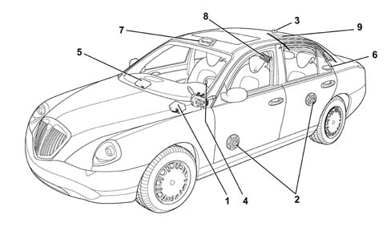
- 1 - Connect module
- 2 - Speakers
- 3 - GPS/GSM aerial
- 4 - Steering wheel controls (opt)
- 5 - CDC (opt)
- 6 - BOSE subwoofer (opt)
- 7 - Handsfree microphone
- 8 - AUDIO amplifier
- 9 - Radio/TV aerials
The Info Telematic Node manages the following tasks:
- receives and sends information on the B-CAN line (e.g.: diagnosis, warning lights, controls, data)
- adds commands for interaction with the various menus
- manages a high definition colour display for navigation or TV
- connects with facia wiring for connection to the vehicle electrical system
- connects with communications wiring for point/point connection of TV tuner , rear TV camera, video cassette player
- set-up for connection with components such as DVD, rear multivideo screens etc.
- interfaces with GPS, GSM and radio aerials by means of coaxial leads
The infotelematic node features a thermal protection function that restricts its operation as internal temperature increases. This prevents permanent damage to the system.
The system is fully operational for interior temperatures lower than 85 °C.
Because normal system operation gives rise to a temperature increase of 20 °C despite a cooling fan in the rear of the NIT, the system interior reaches a limit temperature that leads to deactivation with a passenger compartment temperature of about 65 °C.
Self-diagnosis
The system comes with a self-diagnostic function that checks whether the NIT unit is correctly connected to all external components.
Access to self-diagnostic mode is achieved by pressing the "MAIN" button (1) for at least 10 seconds.
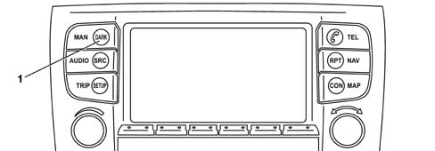
The following components/signals can be diagnosed by means of this function:
- External signal amplifier
- "Coolant level low" signal [F010]
- "Window washer level low" signal [F011]
- +15 signal [F040]
- Exterior lighting sensor activation level signal [F044]
- NIT buttons [F153]
- CD changer [F156]
- Microphone [F160]
- Aerial, phone module and SIM GSM card reader [F166]
- TV tuner and aerial series [F172]
- GPS receiver and aerial [F174]
- CD reader and navigation CD [F174]
- Telephone handset
- Speakers
- Infrared remote control (IR)
- Radio aerial
EOL test mode is used to check whether the NIT unit has been connected to all exterior components following system installation on the vehicle.
It is not therefore necessary to carry out an operation test on the finished system.
Entering test mode
Press the MAIN button for at least 10 seconds to enter EOL test mode.
Two different test modes may be selected on the main test mode page.
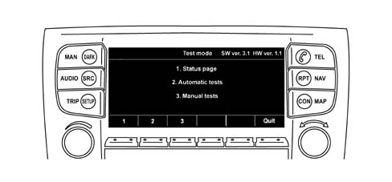
The menu opens at the status page, i.e. the first menu item, upon access to EOL test mode.
Exiting test mode
The system returns to normal mode if no test page is selected for 10 seconds.
Test mode is also abandoned if vehicle speed exceeds 7 km/h.
If vehicle speed is lower than this threshold, test mode may be abandoned only from the main diagnosis page. This is done by pressing the exit button or waiting for the time period mentioned previously to elapse.
Visual representation of test results
In test mode, these take the form of a limited number of instructions in text format.
Positive or negative test outcomes are indicated by means of colour (green or red).
Symbols for tests that may not or must not be carried out yet (e.g. button test) are indicated in yellow.
Tests that cannot be carried out automatically (e.g. TV tuner) must be confirmed manually.
The person who carries out the tests must press the "passed" or "failed" test button in this case.
Storing test results
Test results must be stored in a non-volatile memory so that they can be read by the tester at a later stage.
Test mode exit date and time are also stored if valid date and time data are available and at least one test procedure has been carried out in the current test mode cycle.
Display impementation
In test mode, the display may not be turned on or off on the basis of ignition key position.
Status page
The status page displays all tests that may be carried out automatically. It also shows signal status depending on exterior component availability. e.g. CD changer, TV tuner, telecommunications unit.
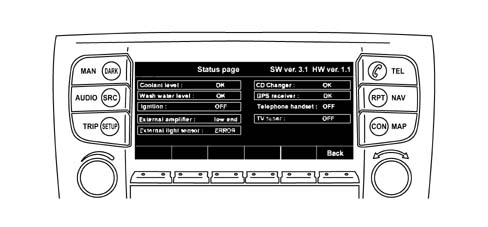
External signal amplifier
The status page shows feedback signal status. This indicates whether the car is fitted with a low or high range sound system (BOSE).
Coolant level too low signal [F010]
The status page displays a "low coolant level" signal status, that is transferred from the interface processor to the main processor.
Screen washer fluid level too low signal [F011]
The status page displays a "low screeen washer fluid level" signal status, that is transferred from the interface processor to the main processor.
+15 signal [F040]
The status page displays ignition signal status. The display and background lighting cannot be deactivated when the signal is turned off.
Exterior light sensor activation level signal [F044]
The status page displays selected activation level in the form of a number of steps (1, 2, 3) and measured voltage level. This is transferred from the interface processor to the main processor.
NIT buttons [F153]
This test can be used to test all hard buttons and the two rotary knows on the NIT unit
To simplify the test, a button test page on the display displays button and rotary knob symbols.
If these buttons pass the manual depression or rotation tests successfully, the symbol colour changes from yellow to green to indicate the function is OK.
If the buttons and knobs are not all detected within 30 seconds, the undetected buttons are marked as defective (in red).
The connection between NIT and CCA units passes the test if it is possible to enter test mode.
CD changer [F156]
The test status page indicates whether a CD changer is available and whether the test CD inserted can be accessed.
To test connection L, the first sound track of the inserted CD is played when the soft "play" button is pressed.
Microphone [F160]
The microphone function is tested by recording a short utterance of 4 seconds maximum duration and playing it back after a short pause.
While the test utterance is recorded, the person carrying out the test must keep the soft button depressed.
If maximum recording time is exceeded, the recording will stop.
Playback begins shortly after the recording button has been pressed.
Aerial, phone module and SIM GSM card reader [F166]
The aerial, phone module and SIM GSM card reader are checked jointly by carrying out a recording test with a GSM network. A SIM card must be inserted in the card reader before the test begins.
If the SIM card reader cannot access the SIM card, the SIM card test is recorded as a failure. The symbol colour changes from yellow to red. The same thing happens if it cannot log onto the GSM network within 60 seconds.
GPS receiver and aerial [F174]
The status page displays the GPS aerial connection. An error message is displayed if the main processor cannot access a GPS receiver.
CD Player and navigations CDs [F174]
The NIT unit attempts to read some files on the CD containing the navigation database. The result indicates whether access to the CD play and data files was successful.
Insert navigation CD before starting this test.
Telephone handset
To carry out this test, lift the phone handset and then press some number keys and the "call set" button.
This call request is suppressed in diagnosis mode. The screen displays phone handset status (replaced or lifted) and the number dialled.
Phone handset cable LF line status can be checked only by attempting to make a phone call through the handset.
It is not possible to switch the phone handset microphone directly to the audio amplifier.
Simple connection test:
- the connection between phone handset and NIT unit can be checked by lifting the phone handset, i.e. taking it off the hook;
- phone handset status is indicated on the display.
Speakers
Check the coils of all connected speakers to run a full check on the sound system speakers.
Both sound systems come with 4 corner speakers and 1 subwoofer.
The top-of-the-range sound system also comes with a central speaker.
In the case of the bottom-of-the-range amplifier, this test requires a sequence of 9 steps, i.e. 4 x (tweeter + midwoofer) + 1 x subwoofer.
In the case of the top-of-the-range amplifier, this test requires a sequence of 10 steps, i.e. 4 x (tweeter + midwoofer) + 1 x subwoofer + 1 x central speaker.
Corner speakers:
- the tweeter test is carried out at 10 kHz.
- the midwoofer test is carried out at 500 kHz.
Subwoofer:
- the test is carried out by simultaneous application of 80 Hz to all 4 channels.
Central speaker:
- the test is carried out by simultaneous application of 1500 Hz to the two front channels.
The tested coil is indicated on the display. If the test signal is not audible, the person carrying out the test must press a soft button with the indication "Error".
The relevant coil symbol will go red. Otherwise it must go green.
Test signal amplitude is programmed by the NIT supplier.
If an internal sound module amplifier channel is deactivated due to a short circuit, the screen indicates this by turning the symbol of the relevant corner speaker to red.
Simple connection test:
- a sound signal (e.g. white noise) lasting 1.5 seconds followed by a pause is sent to all four audio channels in sequence. The screen indicates which channel is being tested.
- If the test signal is not audible, the person carrying out the test must press a soft button with the indication "Error". The relevant coil symbol will go red. Otherwise it must go green.
Infrared remote control (IR)
The test carried out on infrared (IR) remote control buttons is similar to that run on NIT unit buttons: each remote control unit button is displayed on the screen as a symbol.
If the button pressed is detected by the NIT unit, the relevant symbol colour changes from yellow to green.
If a button is detected, the infrared (IR) connection incicator switches from yellow to green. If the buttons have not all been detected within 30 seconds, the symbols are marked as defective (i.e. red).
Simple operation test: to check whether the NIT unit is receiving an infrared (IR) signal, only one button need be pressed.
Radio aerial
The NIT unit automatically activates the radio and tunes it to a set frequency.
The signal intensity is compared with a minimum set level. If the result exceeds this level, the aerial passes the connection test.
FUNCTIONS
Info Telematic Node (NIT) functions are listed below:
- Low engine coolant level from NC switch [F010]
- Low screen washer fluid level signal from NC switch [F011]
- Key on status (INT) [F040]
- Dimmed lighting [F041]
- Side light and dipped beam activation from dusk sensor [F044]
- Seat heating [F065.V2]
- Door/boot lock/release and fuel flap management [F092]
- Automatic closure of doors, boot, fuel flap at more than 30 km/h or when parking (customer-activated). [F094]
- Speed limit exceeded buzzer (user-programed) [F141]
- Radio management [F153]
- Radio management as a function of vehice speed (menu-enabled) [F154]
- Radio control display [F155]
- CD - changer [F156]
- Duplication of radio controls on steering wheel [F157]
- Voice synthesis (navigation system, indicators) with amplified ouput for speakers [F158]
- Voice recognition [F160]
- Clock [F162]
- Trip computer [F163]
- Trip computer and navigation parameter duplication [F164]
- Built-in GSM phone with aerial interface and handsfree operation [F166]
- Timer for radio supply with key off [F169]
- Duplication of phone controls on steering wheel [F171]
- TV tuner with aerial interface and signal duplication on rear seat display [F172]
- Dynamic navigation with GPS aerial interface [F174]
- Navigation pictogram duplication on instrument panel [F176]
- Obstacle proximity buzzer [F179]
- Supplementary heater control unit activation programming (CRS) [F189]
- Outdoor temperature management [F192]
- Control panel menu self-configuration [F224]
- Vehicle access management [F228]
- Vehicle set-up management [F230]
- Parking Brake Automatic device Deactivation [F248]
- Duplication of navigation system controls on steering wheel [F260]
- Duplication of main control on steering wheel [F261]
- Diary management [F266]
- Service reminder display [F269]
- Voice Main management [F270]
For a detailed description of individual functions see: Group 55
CONNECTOR AND PIN-OUT ARRANGEMENT
Nav+ connect control unit connectors and PIN-OUT
The arrangement of connectors on the back of the control unit and connector pin-out tables showing a description of the function of each pin are given below. In the case of signals, signal type is shown, i.e. whether INPUT (I) or OUTPUT (O) type.
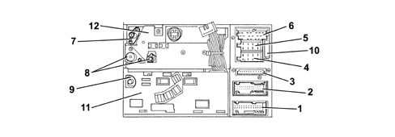
- 1 - NIT Connector A NIT (Black) - 26 way
- 2 - NIT Connector B (Green) - 26 way
- 3 - Screen connector - 10 way
- 4 - Audio connector A - 8 way
- 5 - Audio connector B - 8 way
- 6 - Audio connector C -20 way
- 7 - GPS aerial connector
- 8 - RADIO aerial connector
- 9 - GSM aerial connector
- 10 - 20 Amp fuse
- 11 - Phone module
- 12 - Audio module
PIN-OUT for NIT Connector A (Black) - 26 way
The following table lists the functions of each pin of NIT Connector A (Black)
PIN | Input Output | FUNCTION |
|---|---|---|
1 | O | +30 Power supply for NIT module. (Connected with Connector A front panel PIN 1) |
2 | O | +30 Power supply for display lighting. (Connected with Connector A front panel PIN 2) |
3 | NIT module earth (Connected with Connector a front panel PIN 3) | |
4 | Display lighting earth (Connected with Connector A front panel PIN 4) | |
5 | I/O | I CAN H to Telematic Unit (n.c.*) |
6 | I/O | I CAN L to Telematic Unit (n.c.*) |
7 | I/O | I CAN H to TV module (NTV) |
8 | I/O | I CAN L to TV module (NTV) |
9 | - | n.c. |
10 | I | Connection with CCA for infrared remote control decoded signal input (Connected to Connector A front panel PIN 21) |
11 | I | Connection with CCA for rotary signal 1 from knob A (VOLUME ) (Connected to Connector A front panel PIN 5) |
12 | I | Connection with CCA for rotary signal 2 from knob A (VOLUME ) (Connected to Connector A front panel PIN 6) |
13 | I | Connection with CCA for rotary signal 1 from knob B (SELECT-CONFIRM) (Connected to Connector A front panel PIN 7) |
14 | I | Connection with CCA for rotary signal 2 from knob B (SELECT-CONFIRM) (Connected to Connector A front panel PIN 8) |
15 | Connection with CCA for rotary signals from knob A/B (Connected to Connector A front panel PIN 9) | |
16 | I/0 | Handsfree microphone input from NIM |
17 | Handsfree microphone earth from NIM | |
18 | I | Analogue signal from dusk sensor threshold adjustment on Exterior Lighting Control (CLE) |
19 | - | n.c. |
20 | I | Digital impact signal from ABS (n.c.*) |
21 | I | Negative signal from screen washer fluid level NC sensor. |
22 | I | Negative signal from engine coolant level NC sensor. |
23 | I | Connection with CCA for power supply ON/OFF signal (Connected to Connector A front panel PIN 23) |
24 | O | Connection with CCA for transmission of wake-up signal from NIT (Connected to Connector A front panel PIN 24) |
25 | I | Serial connection with CCA for data reception (Connected to Connector A, front panel, PIN 25) |
26 | O | Serial connection with CCA for data transmission (Connected to Connector A, front panel, PIN 26) |
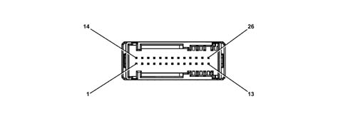
PIN-OUT for NIT Connector B (Green) - 26 way
The following table lists the functions of each pin of NIT Connector B (Green)
PIN | Input Output | Connection for | FUNCTION |
|---|---|---|---|
1 | O | Microtelephone | 8V power source for microtelephone (opt.) |
2 | Microtelephone | Reference earth for microtelephone (opt.) | |
3 | I | Microtelephone | Data reception serial line from microtelephone |
4 | O | Microtelephone | Data transmission serial line to microtelephone |
5 | I | Microtelephone | NIT wake-up signal (Hook interface) |
6 | Microtelephone | Handset earth | |
7 | I | Microtelephone | NIT input for microphone signal |
8 | O | Microtelephone | NIT output for speaker signal |
9 | n.c. | ||
10 | n.c. | ||
11 | n.c. | ||
12 | n.c. | ||
13 | n.c. | ||
14 | n.c. | ||
15 | n.c. | ||
16 | I | TV tuner | RGB signal input from TV Tuner (Red) |
17 | TV tuner | Earth for RGB signal input from TV Tuner (Red) | |
18 | I | TV tuner | RGB signal input from TV Tuner (Green) |
19 | TV tuner | Earth for RGB signal input from TV Tuner (Green) | |
20 | I | TV tuner | RGB signal input from TV Tuner (Blue) |
21 | TV tuner | Earth for RGB signal input from TV Tuner (Blue) | |
22 | I | TV tuner | Composite tuning from TV tuner |
23 | TV tuner | Composite tuning earth from TV tuner | |
24 | TV tuner | Video line earth screening | |
25 | TV tuner | TV/RGB connection (Total shielding) | |
26 | I | TV tuner | TV on signal |
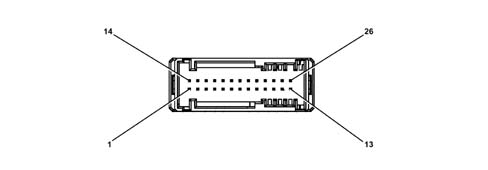
PIN-OUT for Video Connector - 12 way
The following table lists the functions of each pin of the Video Connector
PIN | Input Output | Connection for | FUNCTION |
|---|---|---|---|
1 | I | Control Panel | PIXEL clock input (+) from CCA |
2 | I | Control Panel | PIXEL clock input (-) from CCA |
3 | I | Control Panel | PIXEL clock shielding |
4 | O | Control Panel | RGB signal for CCA (RED) referred to value for pin 7 |
5 | O | Control Panel | RGB signal for CCA (Green) referred to value for pin 7 |
6 | O | Control Panel | RGB signal for CCA (Blue) referred to value for pin 7 |
7 | O | Control Panel | Reference earth |
8 | I | Control Panel | Vertical synchronisation signal from CCA |
9 | I | Control Panel | Horizontal synchronisation signal from CCA |
10 | O | Control Panel | Tuning from TV module |
- | - | - | n.c. |
- | - | - | n.c. |
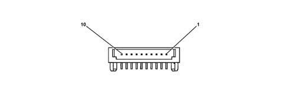
PIN-OUT for Audio connector A - 8 way
The following table lists the functions of each pin of Audio Connector A
PIN | Input Output | Connection for | FUNCTION |
|---|---|---|---|
1 | I/O | Body Computer | B CAN line (Signal H) |
2 | I | Amplifier | BOSE system indication signal |
3 | I/O | Body Computer | B CAN line (Signal L) |
4 | - | n.c. | |
5 | O | Diversity aerial | Diversity aerial power supply |
6 | - | n.c. | |
7 | I | Battery + | NIT connection to vehicle battery positive |
8 | I | Battery - | NIT connection to vehicle battery negative |
PIN-OUT for Audio connector B - 8 way
The following table lists the functions of each pin of Audio Connector B
PIN | Input Output | Connection for | FUNCTION |
|---|---|---|---|
1 | O | Amplifier | Rear rear speaker positive |
2 | O | Amplifier | Rear rear speaker negative |
3 | O | Amplifier | Rear front speaker positive |
4 | O | Amplifier | Right front speaker negative |
5 | O | Amplifier | Left front speaker positive |
6 | O | Amplifier | Left front speaker negative |
7 | O | Amplifier | Left rear speaker positive |
8 | O | Amplifier | Left rear speaker negative |
PIN-OUT for Audio connector C -20 way
The following table lists the functions of each pin of Audio Connector C
PIN | Input Output | Connection for | FUNCTION |
|---|---|---|---|
1 | - | n.c. | |
2 | - | n.c. | |
3 | - | n.c. | |
4 | - | n.c. | |
5 | - | n.c. | |
6 | O | Amplifier | DSP amplifier switch output |
7 | I | AudioTVRight - | Right Audio Input from TV (-) |
8 | I | AudioTVRight + | Right Audio Input from TV (+) |
9 | I | AudioTVScreen | Audio line screening |
10 | I | AudioTVLeft + | Left Audio Input from TV (+) |
11 | I | AudioTVLeft - | Left Audio Input from TV (-) |
12 | - | n.c. | |
13 | I | CD changer | Serial data reception between NIT and CDC |
14 | O | CD changer | Serial data transmission between NIT and CDC |
15 | O | Batt+ CD changer | Power supply for CDC |
16 | O | CD changer | Switch enablement output for CDC/bus |
17 | O | CD changer | CDC earth |
18 | I | CD changer | Shared earth for audio signal from CDC for left/right |
19 | I | CD changer | Left audio signal from CDC |
20 | I | CD changer | Right audio signal from CDC |
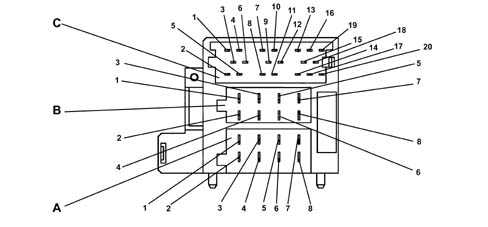
Nav+ connect control panel connectors and PIN-OUT
The arrangement of connectors on the back of the control panel and pin-out tables for connectors are given below.
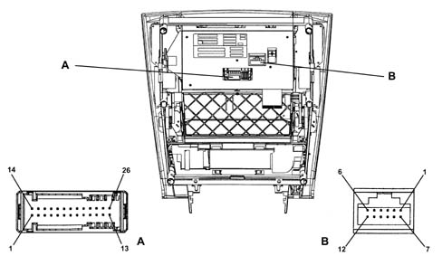
- 1 - NIT Connector A (Blue) - 26 way
- 2 - Video Connector B (Black) -12 way
PINT-OUT for NIT Connector A (Blue) - 26 way
The following table lists the functions of each pin of NIT Connector A (Blue)
PIN | Input Output | FUNCTION |
|---|---|---|
1 | I | +30 Power supply for NIT module. (Connected with NIT Connector A PIN 1) |
2 | I | +30 Power supply for display lighting. (Connected with NIT Connector A PIN 2) |
3 | Earth from NIT for display (Connected to NIT Connector A (PIN 3) | |
4 | Earth from NIT for electronics (Connected to NIT Connector A (PIN 4) | |
5 | O | Connection with NIT for rotary signal 1 from knob A (VOLUME ) (Connected to NIT Connector A front panel PIN 11) |
6 | O | Connection with NIT for rotary signal 2 from knob A (VOLUME ) (Connected to NIT Connector A front panel PIN 12) |
7 | O | Connection with NIT for rotary signal 1 from knob B (SELECT-CONFIRM) (Connected to NIT Connector A PIN 13) |
8 | O | Connection with NIT for rotary signal 2 from knob B (SELECT-CONFIRM) (Connected to NIT Connector A PIN 14) |
9 | Connection with NIT for rotary signals from knob A/B (Connected to NIT Connector A PIN 15) | |
10 | I/O | Climate control unit serial interface |
11 | Earth for climate control unit serial interface | |
12 | n.c. | |
13 | n.c. | |
14 | n.c. | |
15 | n.c. | |
16 | n.c. | |
17 | n.c. | |
18 | n.c. | |
19 | n.c. | |
20 | n.c. | |
21 | O | Connection with NIT infrared signal for remote control unit (Connected to NIT Connector A PIN 21) |
22 | n.c. | |
23 | O | Connection with NIT for power supply ON/OFF signal (Connected to NIT Connector A PIN 23) |
24 | I | Connection with NIT for transmission of wake-up signal from NIT (Connected to NIT Connector A PIN 24) |
25 | O | Serial connection with NIT for data reception (Connected to NIT Connector A, PIN 25) |
26 | I | Serial connection with NIT for data transmission (Connected to NIT Connector A, PIN 26) |
PIN-OUT for Video Connector B (Black) -12 way
The following table lists the functions of each pin of Video Connector B (Black)
PIN | Input Output | Connection for | FUNCTION |
|---|---|---|---|
1 | O | NIT | PIXEL clock output (+) for NIT |
2 | O | NIT | PIXEL clock output (-) for NIT |
3 | O | NIT | PIXEL clock shielding |
4 | I | NIT | RGB signal from NIT (Red) |
5 | I | NIT | RGB signal from NIT (Green) |
6 | I | NIT | RGB signal from NIT (Blue) |
7 | I | NIT | Reference earth |
8 | O | NIT | Vertical synchronisation signal for NIT |
9 | O | NIT | Horizontal synchronisation signal for NIT |
10 | I | NIT | Composite tuning from TV module |
- | - | - | n.c. |
- | - | - | n.c. |
COMPOSITION
General remarks
The system communicates with the user by means of a multifunction display used by all systems/components making up the CONNECT system. Acoustic instructions (e.g. for the navigation system) are supplied via the front radio system speakers.
The system includes certain internal components and monitors various external components.
The main components of the CONNECT system are a control panel (CCA), central unit (NIT) and climate control system panels at front (standard) and rear (optional).
The CCA and NIT units may be subdivided into several internal components.
A diagram and short list of the main internal and external components of the full multimedia system are shown below.
Basic information is also given for each module/component.
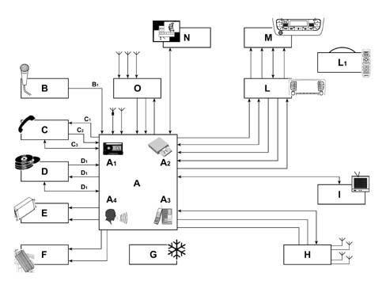
- A - NIT central unit
- A1 - CC audio module
- A2 - CD audio module (Navigation + audio)
- A4 - Voice Recognition module
- A3 - GSM module + SIM card reader
- B - Microphone
- C - Phone handset (OPT)
- D - CD changer OPT)
- E - DSP/low-range amplfier
- F - DSP/Top-range amplifier (Bose) to replace DSO/Low-range amplifier (OPT)
- G - Climate control system rear panel (OPT)
- H - TV tuner (OPT)
- I - Body Computer
- L - CCA front panel
- L1 - Infrared remote control
- M - Front climate control system panel
- N - Telematic unit (OPT) (*)
- O - Amplifier/Diversity aerials FM
- P - Infrared receiver
(*) Future application
Multifunction display
The video consists of a module with a lighting unit built into the front panel.
The video consists of an active matrix colour LCD (TFT technology) measuring 7 inches, with the following technical specifications:
- resolution, 234 pixels vertically by 480 pixels horizontally (active area: 153.4 mm x 86.4 mm) and RGB (red, green, blue) in row configuration;
- analogue RGB interface (true color);
- backlit at 350 cd/m2 with two cold cathode bulbs;
- surfaces with scratch-resistant antiglare coating;
- contrast, minimum value 50:1.
Two possible display settings can be used to optimise visibility by the user:
- the first is used for daytime operation. The lighting level is set automatically on the basis of environmental light levels detected by a phototransistor located next to the display.
- the second, for operation with side lights on. With this setting, the brightness level is adjusted as on other on-board instruments.
Function screens
The display shows the various screens relating to primary and secondary system functions (refer to the User Manual for user instructions).
A function screen is a specific menu that appears on the screen. This provides information to the NIT (Info Telematic Node) on current system status and/or subfunctions that can be selected from the menu or by keys.
Main system functions are described below.
General remarks
A function screen is made up of several parts:
- a function menu,
- softkey labels,
- selection cursor,
- status bar,
- identifier (title) of function screen (secondary),
- a list,
- icons,
- point graphics,
- control boxes,
- control buttons
Function menu (1)
The menu consists of several system subfunctions, each of which constitutes a menu item (known also as a selectable item or menu option).
The menu may also be defined as a set of all available options relating to a selected function. Each option consistutes a menu item or a selectable item.
Softkey labels (2)
Each one corresponds to the name of a system subfunction that may be called up (activated) with the corresponding key.
Selection cursor (3)
The cursor takes the form of a coloured rectangle. It may be moved using the JOG key to select a certain menu item or by pressing one of the soft keys (e.g. the key used to change the radio station).
The cursor may be in selection mode (only the rectangle outline is coloured) or in highlighted mode (the entire rectangle is coloured).
Status bar (4)
This is the first row at the top when the screen of a primary function is displayed. This status bar normally shows the time, outside temperature and audio source in operation at a given moment. According to system status, some information supplied by the system must also be displayed on this status bar.
Screen title (5)
Refers to the function selected/activated in the screen relating to a secondary function.
Virtual connection line (6)
This line connects the JOG to the menu items, or a selected menu item to another item or another option that represents an item on the list.
Check box (7)
This is part of the menu and indicates the status of a selected function:
- the function is off or deactivated if not marked by a cross;
- the function is on or active when marked by a cross.
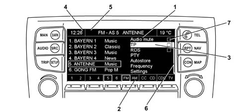
Main system functions are described below.
Main
Press the MAIN key (12) to display the main system screen that shows information relating to:
- time (1)
- date (2)
- temperature (3)
- phone service provider (4)
- phone functions (5)
- SMS message management (6)
- phone field intensity (7)
- navigation map (or pictogram) (8)
- softkey labels (9)
- trip computer information (10)
- current AUDIO module settings (Radio, CD, CDC, CC)
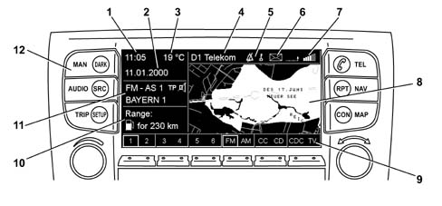
Audio
Press the AUDIO key (15) for less than one second to gain access to a subsystem that displays the specific screen with information/functions relating to:
- MUTE function activation/deactivation field (1)
- TP (Traffic Program)* function activation/deactivation field (2)
- RDS function activation/deactivation field (3)
- PTY function submenu control (4)
- AUTOSTORE function submenu control (5)
- FREQUENCY SELECTION function submenu control (6)
- SETTINGS function submenu control (7)
- CDC player or TV selection softkeys (8)
- CC or CD player selection softkeys (9)
- FM or AM radio frequency BAND selection softkey
- Stored radio station selection softkeys (11)
- Stored radio station information display field (12)
- Frequency BAND and selected radio station display field (13)
- Selected radio station identification field (14)
- AUDIO submenu access/exit key (15)
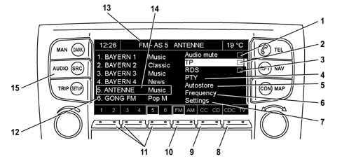
Trip
Press the TRIP key (1) to display the on-board computer function screen. This includes the following:
- TRIP TIME function submenu control (2)
- DISTANCE TRAVELLED unction submenu control (3)
- FUEL CONSUMPTION AND RANGE function submenu control (4)
- SPEED AND LIMITS function submenu control (5)
- HISTORICAL DATA function submenu control (6)
- DISTANCE REMAINING function submenu control (7)
- Softkey for activating SETTINGS function (8)
- Softkey for activating LOG function (9)
- Softkey for activating ZOOM+ function (10)
- Softkey for activating TIME function (11)
- Softkey for activating current settings/data RESET function (12)
- Display area dedicated to parameter display
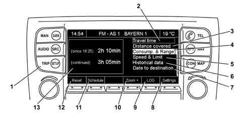
Tel
Once the phone module is activated, it is always possible to make emergency calls to 112 regardless of whether a SIM card is present or a PIN has been entered.
Press the TEL ON key (11) to display the main phone module function screen. This includes the following:
- Softkeys for dialling a phone number (1).
- Dialled number display field (2).
- Field intensity indicator (3).
- Incoming SMS message indicator (4).
- Indicator showing Provider in use (5).
- GUIDE AND LIST function submenu control (6)
- CALL SECRETARY function submenu control (7)
- OPTIONS function submenu control (8)
- CHANGE function submenu control (9)
- DELETE function submenu control (10)
Key (12) allows outgoing calls/SMSs to be sent, closure of call in progress or acceptance of an incoming call.
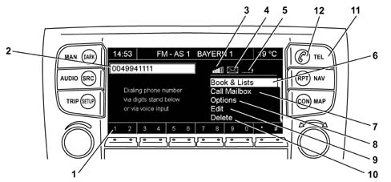
Nav
Press the NAV key (1) to display the main navigation system function screen. This includes the following:
- Softkey for activating MUTE function (2)
- Softkey for activating INFO function (3)
- Softkey for activating DEVIATION function (4)
- Softkey for activating HOME function (5)
- Softkey for activating DEACTIVATE function (6)
- Field showing graphic indications of manoeuvres to be carried out (right turn, left turn), indication of road currently being travelled and distance to point at which manoevre must be carried out (7).
- Field showing next road to be taken (8)
- Field showing distance to destination (9)
- Field showing current time (10)
- DESTINATION function submenu control (11)
- ITINERARY function submenu control (12)
- Use TMC function check box (13)
- SETTINGS function submenu control (14)
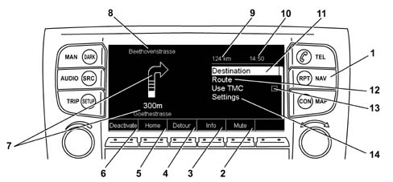
Map
Press the MAP key (1) to display the main map function screen. This includes the following:
- Softkey for activating OPTIONS function (2)
- Softkey for activating ZOOM - function (3)
- Softkey for activating ZOOM + function (4)
- Softkey for activating UP/DOWN function (5)
- Softkey for activating LEFT/RIGHT function (6)
- Softkey for activating ATLAS function (7)
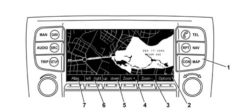
Connect
Press the CON key (1) to display the main CONNECT menu function screen. This includes the following:
- VOICE MEMO function submenu control (2)
- TARGA SERVICE function submenu control (3)
- Use TMC function check box (4)
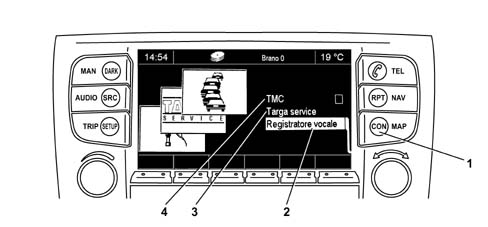
Src
Press the SRC key (1) to display the main SOURCE menu function screen. This includes the following:
The example shown below refers to radio mode. As with other sources, the right-hand selector is turned and then pressed to display specific screens that group all features/functions of the selected source:
- Stored radio station selection softkeys (2)
- FM-A or FM-B radio frequency BAND selection softkey (2)
- FM OR AUTOMATIC SEARCH (Autostore) radio frequency BAND selection softkey (4)
- MW or LW radio frequency BAND selection softkey (5)
- RADIO source information display field (6)
- TAPE source information display field (7)
- CD source information display field (8)
- CD CHANGER source information display field (9)
- TV source information display field (10)
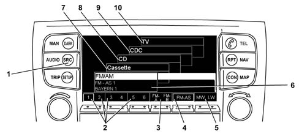
Setup
Press the SETUP key (1) to display the main settings menu function screen.
This menu contains seven submenus and can be used to set most of the car functions.
The main screen includes the following:
- Field showing selected SETTING (2). The setting may be given a name set by the user.
- NIT SETTING unction submenu control (3)
- DOOR AND SUN-ROOF SETTING function submenu control (4)
- SUPPLEMENTARY HEATER SETTING function submenu control (5)
- SEAT COMFORT SETTING function submenu control (6)
- DOOR OPEN REMOTE CONTROL SETTING function submenu control (7)
- DATE AND TIME SETTING function submenu control (8)
- MISCELLANEOUS SETTING function submenu control (9)
- Softkey for activating HELP function (10)
- Softkey for activating ZOOM+ function (11)
- Softkey for activating SAVE function (12)
- Softkey for activating RECALL function (13)
- Softkey for activating DISPLAY function (14)
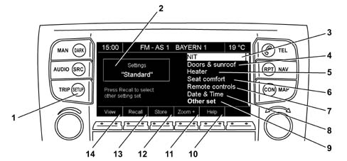
Select settings by pressing the RECALL softkey on the main screen. This activates a submenu that is associated with the following screen:
- Field showing selected SETTING (1).
- STANDARD SETTING activation field (2)
- SETTING 1 activation field (3)
- SETTING 2 activation field (4)
- SETTING 3 activation field (5)
- Field OK (6)
- CANCEL field (7)
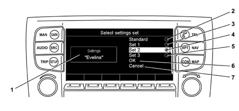
Selection of the NIT SETTING function submenu control from the main screen activates a submenu that is associated with the following screen:
- LANGUAGE SETTING function submenu control (1)
- TEMPERATURE SETTING function submenu control (2)
- PICTOGRAM on MAIN function check box (3)
- BEEP function check box (4)
- SCREEN function submenu control (5)
- Softkey for activating BACK function (6)
- Softkey for activating MEMORY function (7)
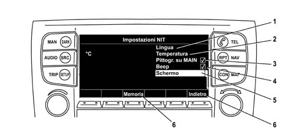
Selection of the DOOR AND SUN-ROOF SETTING function submenu control from the main screen activates a submenu that is associated with the following screen:
- AUTOMATIC DOOR CLOSURE function check box (1)
- DOORS LOCKED IF SPEED > 10 km/h function check box (2)
- UNLOCK LUGGAGE COMPARTMENT WITH DOORS function check box (3)
- LOCK STEERING WHEEL WITH DOORS function check box (4)
- LOCK GLOVE COMPARTMENT function check box (5)
- Softkey for activating DELETE function (6)
- Softkey for activating OK function (7)
- Softkey for activating MEMORY function (8)
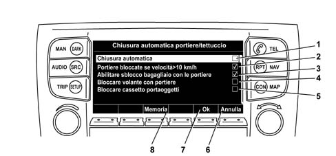
Selection of the SUPPLEMENTARY HEATER SETTING function submenu control from the main screen activates a submenu that is associated with the following screen:
- TURN ON NOW function check box (1)
- TIMER 1 function check box (2)
- TIMER 2 function check box (3)
- Softkey for activating RETURN function (4)
- TIMER 2 source information display field (operation start time, duration) (5)
- TIMER 1 source information display field (operation start time, duration) (6)
- HEATER OPERATION CONDITION information display field (OFF-ON) (7)
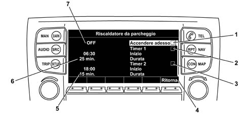
Selection of the SEAT COMFORT SETTING (*) function submenu control from the main screen activates a submenu that is associated with the following screen:
- SEAT HEATING function check box (1)
- SEAT VENTILATION function check box (2)
- MESSAGE function check box (3)
- ADAPTABILITY function check box (4)
- Softkey for activating DELETE function (5)
- Softkey for activating OK function (6)
- Softkey for activating PASSENGER function (7) (for selecting equivalent commands for passenger seat)
- Field displaying information on seat alternative to seat used for setting (if the driver’s side seat is selected, as in the example, the box shows the settings applied to the passenger seat) (8)
(*) The functions indicated below are specific only to the TOP specification version
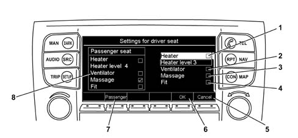
Selection of the DOOR OPENING REMOTE CONTROL SETTING function submenu control from the main screen activates a submenu that is associated with the following screen:
- OPEN ONLY DRIVER DOOR function check box (1) (The alternative is normal opening of all car doors if function is not activated)
- FOLLOW-ME HOME function check box (2) For this function to be enabled, it must be activated whenever the user wishes to use it.
- Softkey for activating DELETE function (3)
- Softkey for activating OK function (4)
- Softkey for activating MEMORY function (5)
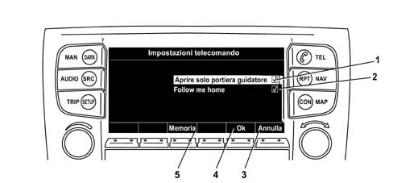
Selection of the DATE AND TIME SETTING function submenu control from the main screen activates a submenu that is associated with the following screen:
- DATE setting activation field (1)
- TIME setting activation field (2)
- TIME ZONE setting activation field (3)
- GREENWICH MEANTIME function check box (4)
- RDS time function check box (5)
- BACK function activation field (6)
- Softkey for activating 12/24h function (7)
- Settings display field activated (8)
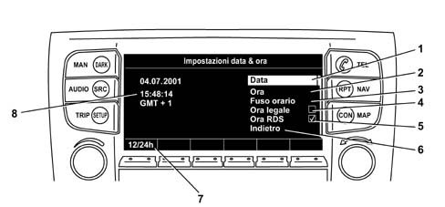
Selection of the MISCELLANEOUS SETTING function submenu control from the main screen activates a submenu that is associated with the following screen:
- AUTOMATIC HANDBRAKE function check box (1) It is strongly advisable to deactivate this function before turning off the engine in case workshop service operations require battery disconnection. Otherwise, application of the handbrake makes it impossible to move the car manually.
- Softkey for activating DELETE function (2)
- Softkey for activating OK function (3)
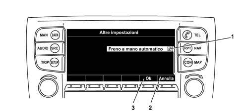
NIT FRONT CONTROL PANEL
The front control panel may be separated from the NIT unit. It is specifically identifiable as an electronic control circuit that includes CD and TAPE players and housing for the phone card.
Both components are connected by means of two connectors on the back of the panel.
The devices present on the CONNECT control panel are listed and described below:
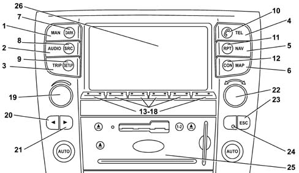
- 1 - MAIN function display key
- 2 - AUDIO function display key
- 3 - TRIP function display key
- 4 - PHONE function display key
- 5 - NAVIGATION function display key
- 6 - Navigation map display key.
- 7 - Display darkening key.
- 8 - AUDIO source selection update key.
- 9 - Car SET-UP function selection key.
- 10 - Phone call/SMS send/accept key.
- 11 - Last navigation system audio information repeat key.
- 12 - CONNECT function display key
- 13 - Reconfigurable key.
- 14 - Reconfigurable key.
- 15 - Reconfigurable key.
- 16 - Reconfigurable key.
- 17 - Reconfigurable key.
- 18 - Reconfigurable key.
- 19 - Volume adjustment selector, system ON/OFF, phone call/message refusal.
- 20 - "Forward" multifunction key (frequency search/scan, track/cd change, tape fast forward/rewind).
- 21 - "Back" multifunction key (frequency search/scan, track/cd change, tape fast forward/rewind).
- 22 - Submenu search/confirm selector.
- 23 - Return to previous screen key (within same function).
- 24 - Infrared receiver for remote control/panel lighting photodiode.
- 25 - NIT front panel
- 26 - Display
The devices present on the NIT front panel are listed and described below:
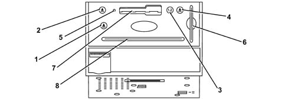
- 1 - Eject key for Compact Disc
- 2 - Eject key for Audio Tape
- 3 - Audio Tape playing direction change key
- 4 - Eject key for SIM Phone Card
- 5 - RESET key
- 6 - GSM card slot
- 7 - Audio Tape slot
- 8 - CD player slot
Controls function
The control labels indicate main system functions. Other functions or subfunctions subsidiary to the main functions may be activated or recalled using the softkeys or via the menu.
MAIN.
Displays the Main function screen and the various softkeys for other system functions.
DARK
Darkens the monitor lighting and displays the previously selected function screen.
AUDIO on
Press this key for less than one second: to turn on the audio subsystem or select the audio function.
Press this key for longer than one second to turn off the audio subsystem.
SOURCE
Changes audio source (radio, tape player [CC], CD player or CD selector [CDC]) and TV source.
TRIP
Selects on-board computer functions, on-board LOG, Schedule etc.
SETUP
Sets various parameters and specific car parameters
TEL on
Press this key for less than one second to gain access to the phone module or select the phone function.
Press this key for longer than one second to turn off the phone module.
Phone symbol
Receive/close a phone call.
Dial a phone number selected/keyed in.
Read a recently-received short text message (SMS)
NAV on
Press this key for less than one second to gain access to the navigation system or select the navigation function.
Press this key for longer than one second to turn off the navigation system.
Repeat
Repeat the last navigation instruction
SERV
Select Services function
MAP
Select Map navigation function
VOL
Volume adjustment.
Turn the key or raise or lower the volume.
Press the key to turn the system on or off. Update is deacivated if traffic bulletins are received or navigation system voice instructions are issued.
When the phone rings, press the key to refuse a call.
JOG
Turn the knob to select a function:
- turn clockwise to move the selection cursor (down or right)
- turn anticlockwise to move the selection cursor (up or left)
Press the knob to confirm execution of the previously selected function.
Specific cases when the knob is turned (Fast scroll function):
- To scroll through a long list quickly, turn the knob more or less rapidly according to requirements.
- To scroll quickly through the alphabet or lists of special symbols or figures (Typewriter function)
- Entry of a numerical value (e.g. frequency, speed limit, time etc.).
Softkeys
Rocker keys located beneath the lower part of the display. These are known as softkeys because their labels can be configured according to the subfunctions to be implemented.
Cursor keys
Located beneath the VOL key. These are used for:
- search and SCAN functions in radio mode;
- changing track in CD mode;
- rewind or fast forward in CC mode (tape player).
ESC key
This key, located beneath the JOG key, is used to go back to the next level up in the same function.
AUDIO/TV module buttons/controls operation
The AUDIO/TV module can be controlled using the keys on the control panel and also by means of a remote control unit or voice commands (see Owner Handbook for user instructions). The following table shows activation possibilities for the various Audio/TV functions.
Function | Keys on NIT control panel | Key/s on remote control | Controls on the steering wheel |
|---|---|---|---|
Audio on/off | Press the AUDIO key for less than 1 second (on) or longer than 1 second (off) | Press the ON-OFF key for less than 1 second (on) or longer than 1 second (off) | Not used |
Change source | Press "FM", "AM", "CC", "CD", "CDC", "TV" keys or "SOURCE" key | Press SOURCE key | SRC |
Volume adjustment | Press VOL key | Press "VOL+" or "VOL-" key | VOLUME+ or "VOLUME-" |
Stored radio station selection | Press keys "1", "2", "3", "4", "5", "6" | Press keys "1", "2", "3", "4", "5", "6" | Not used |
Search/scan radio stations up/down | Press the cursor down or cursor up key for longer than two seconds | Press the cursor down or cursor up key for longer than two seconds | Press the "SCAN+" or "SCAN-" key for less than two seconds |
Search/scan radio stations intros up/down | Press the cursor down or cursor up key for longer than two seconds | Press the cursor down or cursor up key for less than two seconds | Press the "SCAN+" or "SCAN-" key for longer than two seconds |
Change tape direction in CC mode | Press the Reverse key to reverse tape direction | Not used | Not used |
Fast rewind/fast foward in CC mode | Press the rewind key (left cursor) or fast forward key (right cursor) for longer than 2 seconds | Press the rewind key (left cursor or down cursor) or fast forward key (right cursor or up cursor) for longer than 2 seconds | Press the "SCAN-" key (rewind) o "SCAN+" key (fast forward) for longer than two seconds |
Music search in CC mode (activate the corresponding menu item) | Press the rewind key (left cursor) or fast forward key (right cursor) for less than 2 seconds | Press the back key (left cursor or down cursor) or forward key (right cursor or up cursor) for less than 2 seconds | Press the "SCAN-" key (back) o "SCAN+" key (forward) for longer than two seconds |
Pause/Play in CC mode | Press softkeys (Pause) and/or (Play) | Press ON/OFF key | Not used |
Move to the next track or return to the previous track in CD mode | Press the back key (left cursor) or forward key (right cursor) | Press the back key (left cursor or down cursor) or forward key (right cursor or up cursor) | Press the "SCAN-" key (back) o "SCAN+" key (forward) for less than two seconds |
Pause/Play in CD mode | Press softkeys (Pause) and/or (Play) | Press ON/OFF key | Not used |
Select CD in CDC mode | Press softkeys "1", "2", "3", "4", "5", "6" | Press keys "1", "2", "3", "4", "5", "5" | Not used |
Play/Stop in CDC mode | Not used | Press ON/OFF key | Not used |
TV on/off | ON softkey "12" or "Source" key OFFsoftkey "4" | Press ON/OFF key | Not used |
Select TV channels | Press softkeys "1", "2", "3", "4", "5", | Press keys "1", "2", "3", "4", "5", "5" | Not used |
The following figure shows control buttons on the steering wheel and remote control unit
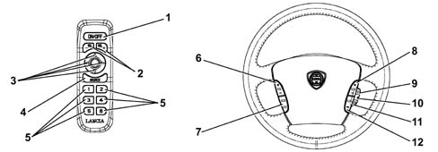
- 1 - Remote control on/off button
- 2 - Remote control button
- 3 - Multidirectional remote control cursor (cursor keys)
- 4 - AUDIO source selection remote control button
- 5 - Preselection remote control buttons
- 6 - Steering wheel button for volume adjustment
- 7 - Steering wheel button for selecting AUDIO sources and activating voice commands or voice memo recording
- 8 - Steering wheel button for scanning +/- radio stations - CD tracks - TV programmes and tape fast forward/rewind
- 9 - Steering wheel button equivalent to anticlockwise rotation of submenu search/confirmation selector
- 10 - Steering wheel button equivalent to depression/confirmation of submenu search/confirmation selector
- 11 - Steering wheel button equivalent to clockwise rotation of submenu search/confirmation selector
- 12 - Steering wheel button for selecting CONNECT operating mode: SMS phone function confirm/refuse
Soft keys
Rocker keys located beneath the lower part of the display. These are known as softkeys because their labels can be configured according to the subfunctions to be implemented.
OPERATION
Languages supported
The CONNECT multimedia system supports 5 different languages for the display of text and incomng and outgoing voice communications.
Languages may be configured by the user and are as follows:
- Italian
- English (UK or US)
- German
- French
- Spanish
The choice of language affects the behaviour of the following system modules:
- text display on NIT,
- voice recognition system (refer to the Owner Handbook for user instructions)
- navigation system module announcements.
- Telematic module events table.
SYSTEM OPERATING STATES
During operation, the system will be in one of the following status modes from the user viewpoint.
Turned on by means of ignition key (synchronous)
The synchronous operating mode is activated by measn of an NIT command. In his mode, system activation and deactivation is linked to ignition key status (Key_ON) - (Key_OFF).
If the system is turned off by pressing the knob before key-OFF, the system stays off at the next key-ON.
Turned on by button
Normal operating mode, available after the user has pressed the rotary volume knob. System activation by pushing the button is possible only after deactivation by means of the ignition key (Key_OFF).
Stand-by
The display and audio output are off. Some functions (e.g. the positioning function) still continue to remain active in the background. To gain access to stand-by mode, press the rotary volume knob while the system is active and the ignition key is in ON position.
Off
Complete system deactivation.
EXTREME SYSTEM OPERATING CONDITIONS
Processor load management
Process load is high following simultanous activation of voice recognition, map display and route calculation functions.
The CONNECT system guarantees that this does not give rise to unexpected results by managing priorities.
The system does not show any reaction, except a time lag for functions with lower priority.
The priority sequence is as follows: voice recognition, map display, route calculation.
Minimum voltage condition
- The system operates without any restrictions within a range between 10 and 16 V.
Between 7 and 10 V, system operation may be reduced while the CAN functions are not subject to any limitation. Below 7 V, the system could turn off but this does not interfere with the CAN bus.
In the interval between 7 and 10 V, the system enters into a mode similar to STAND-BY.
This means that the display backlighting and radio module are deactivated and keypad events (apart from IR remote controls and steering wheel controls) are ignored.
If the ignition key is in ON position, the system abandons STAND-BY mode when battery voltage again exceeds 10V.
If the ignition key is in OFF position (the system has been reactivated by pressing the On/Off button), the system goes off, e.g. it enters the OFF mode.
The system does not save data in its non-volatile memory if supply voltage drops below 10V.
Excess tension condition
In the interval between 16 and 23 V, the system is disconnected from the battery voltage by means of a hardware switch.
The system is again connected to battery voltage when the voltage drops below the overvoltage limit.
The overvoltage condition takes the form of a normal battery disconnection.
All unsaved information, e.g. user configurations, GPS almanac etc. are lost.
Minimum temperature condition
The system operates up to a minimum environmental temperature of -30 °C.
It is, however, possible for certain internal components to deactivate if their temperature limits differ from this value. These are, in particular, the CD, CC, GSM module and display. A special management system is therefore adopted in cases of low temperature.
Components are turned off on the basis of temperature limits, evaluated temperature and temperature of the nearest sensor.
The system is not designed to operate at temperatures below -40 °C.
If the system is reactivated (e.g. via CAN or a heater remote control), and a temperature of lower than -40 °C is measured, the system is turned off again.
External components (particularly the supplementary vehicle heater) may not therefore be turned on if the measured temperature is lower than the system limit.
In this case, the system cannot be restarted for the next 5 mintes. This feature allows the system to attempt to restore the temperature to operational levels.
Excessive temperature condition
The system limit environment temperature is +65 °C, since the internal temperature is some 20 °C higher, the system is able to withstand a temperature of 85 °C.
Within a range between +70 °C e +85 °C, the display is dimmed in linear manner from 100% to 20%. Within this temperature interval, the GSM module reduces its transmission capacity.
If the system deactivates due to excessive temperature, it cannot be reactivated for the next 5 minutes. This feature allows the system to cool to within the normal operating temperature interval.
PRIORITY MANAGEMENT
NIT unit priority management affects incoming and outgoing visual and acoustic sources. The concept is based on the following rules.
1. Three priority levels are present:
- emergency (level 1),
- urgent (level 2),
- normal (level 3),
2. Components do not alter priority as a result of external or internal conditions. A function cannot, however, be executed via voice control as long as a phone conversation is in progress (point 11).
3. Outputs are classified on the basis of content and not source. For example, a traffic warning message will take priority regardless of source (TMC or telematic unit).
4. Information or dialogue windows have a minimum display time of 2 seconds. During this period, they cannot be relaced even by messages with higher priority. This is to prevent the display from flashing.
5. Elements with different priorities that are located in different, non-overlapping areas of the screen will not block one another. An icon with higher priority located inside a status line will not therefore affect the display of a window displaying lower priority information in the middle of the screen as long as the relevant visual areas do not overlap.
6. If a component is associated with a visual output and an acoustic output other than a buzzer, each is allocated a different priority. If a resource (acoustic or visual channel) is occupied, the two outputs do not occur simultaneously. In this case, the component output corresponds onlly to the resource, which may be allocated on the basis of a priority table. This rule affects controls relating to manoeuvres and changes of context. The priority subdivision is indicated in the table below.
7. If an item needs an acoustic channel to indicate a visual output (e.g. a buzzer indicates a warning message), this waits until both resources are available to ensure a synchronised output.
8. With the exception of emergency calls and medical support, the user can change the context at any time (e.g. from the main page to the phone page) by pressing one of the hard buttons.
9. Items activated by the user are usually higher priority than items activated from the outside.
10. A phone call is always higher priority than a manoeuvre-related command.
11. During phone calls, it is not possible to carry out certain voice recognition actions.
12. The user may program the mix of sounds generated by built-in audio chips, with the audio source active at that moment. It is not, however, possible to mix sounds that are not generated by an audio chip (e.g. phone rings) with the audio source. These sounds bring about attenuation of the audio source.
13. The user may activate one single entertainment source (radio, CC, CDD, CDC, TV) at a time. This source may be interrrupted or suppressed (e.g. by mixing) by a higher priority source on the basis of the priority table shown below.
14. Traffic information obtained by means of a telematic information source (TMC or Viasat) are graded into 3 different priority categories. high (e.g. driving on wrong side of road), normal (e.g. traffic congestion along the route) and low (e.g. general information).
15. The dark operating mode is deactivated if it is superseded, for example, by a change of context.
16. Any conflict relating to command input sources is resolved on the basis of the following list (from high priority to low priority):
- remote control on the steering wheel,
- voice command
- NIT unit hard buttons,
- NIT unit soft buttons,
- NIT unit menu items,
- remote control.
Priority Table
Priority | Element | Display | Acoustic Signal |
|---|---|---|---|
1.1 | Emergency Call | Modal dialogue window | Operator |
1.2 | Medical support | Modal dialogue window | Operator |
1.3 | RDS message with PTY 31 code | Modal dialogue window | Buzzer |
2.1 | Context change | Screen relating to new context | Selected source |
2.2 | Warning message | Modal dialogue window | Buzzer |
2.2 | Incoming traffic information (high priority) | Modal dialogue window | Buzzer |
2.3 | Fault call | Modal dialogue window | Operator |
2.4 | Dark mode | Display deactivated | - |
2.5 | Repetition of commands relating ot manoeuvres | - | Voice ouput |
2.6 | Incoming phone call | Modal dialogue window | Phone ring |
2.7 | Phone connection established | Modal dialogue window | Phone call |
2.8 | Commands relating to manoevres: voice announcement | (pictogram) | Voice ouput |
2.9 | HMI dialogue manager | - | Voice ouput |
2.10 | Voice memo recording | Modal dialogue window | (all sources are deactivated) |
2.11 | Warning from parking sensor | - | Various buzzers |
2.12 | Incoming traffic information (normal priority) | Modal dialogue window | Buzzer |
2.13 | Speed limit warning | Modal dialogue window | Buzzer |
2.14 | Incoming SMS | Icon, modal dialogue window | Buzzer |
2.15 | Messages from on-board computer (e.g. from vehicle protection system) | Modal dialogue window | Buzzer |
2.16 | Information on units | Modal dialogue window | Selected source |
3.1 | Menu | Menu items, selection cursor | Selected source |
3.2 | Playback of recorded voice memos | ? | Memos recorded |
3.3 | Rear view TV camera | TV camera images | Selected source |
3.4 | TV (v = > 7 km/h) | Modal information window | TV sound |
3.5 | TV (v < 7 km/h) | TV image | TV sound |
3.6 | Commands relating to manoevres: pictograms | Pictogram | Voice ouput |
3.6 | Map display | Map | Audio source |
3.6 | Incoming traffic information (low priority) | Modal dialogue window | Buzzer |
3.7 | Function page | normal display | Audio source |
CONTROL FUNCTION SUMMARY TABLE
This section lists execution methods for functions supported by the CONNECT Nav+ system
In general, most functions may be implemented by selecting a hardward button, a software button associated with a context or a menu item.
Some functions may not, however, be executed explicitly because they are dependent on the context. One example is the display of icons such as the phone signal intensity icon on the main page. The following tables do not show the functions that cannot be selected. An example of a function execution table is shown below:
Function | Hard button | Soft button | Menu | Item | Other |
|---|---|---|---|---|---|
Volume control | X | X | X | Steering wheel and audio remote control |
The first column indicates the name of the function to be executed, while the other columns indicate possible modes. The last column on the right lists other possible input modes.
Audio processing
Function | Hard button | Soft button | Menu | Item | Other |
|---|---|---|---|---|---|
Volume control | X | X | X | Steering wheel and audio remote control | |
Volume limitation upon start-up | X | ||||
Sound level | X | ||||
Bass/treble | X | ||||
Attenuation/balance | X | ||||
Selection of entertainment by user | X | X | X | Steering wheel and audio remote control |
Transmission receiver
Function | Hard button | Soft button | Menu | Item | Other |
|---|---|---|---|---|---|
Band selection | X | X | |||
Station selection | X | X | Audio remote control | ||
Frequency selection | X | X | |||
Scanning up | X | Steering wheel and audio remote control | |||
Scanning down | X | Steering wheel and audio remote control | |||
Scanning up | X | Steering wheel and audio remote control | |||
Scanning down | X | Steering wheel and audio remote control | |||
Save current station | X | X | |||
Automatic store | X | X | |||
Frequency display | X | ||||
Name display | X | ||||
Traffic programme mode | X | ||||
Reinforcement of other networks | |||||
Display of programme service + automatc maximum | X | ||||
Programme type | X | ||||
Automatic maximum |
CC
Function | Hard button | Soft button | Menu | Item | Other |
|---|---|---|---|---|---|
Playback | X | X | Audio remote control | ||
Stop | Eject tape, change sound source | ||||
Pause | X | Audio remote control | |||
Fast forward | X | X | Audio remote control | ||
Fast rewind | X | X | Audio remote control | ||
Eject | X | ||||
Next track | X | X | X | ||
Previous track | X | X | X | ||
Scan | X | ||||
Skip empty spaces | X | ||||
Play and change current side | X | X | |||
NR Dolby | X |
Audio CD
Function | Hard button | Soft button | Menu | Item | Other |
|---|---|---|---|---|---|
Repeat play selector | X | ||||
Random play selector | X | ||||
Next track | X | X | Audio remote control | ||
Previous track | X | X | Audio remote control | ||
Pause | X | Audio remote control | |||
Playback | X | X | Audio remote control | ||
Stop | Eject tape, change sound source | ||||
Forward search | X | ||||
Backward search | X | ||||
CD title edit | X | ||||
First ten | X |
CD Changer
Function | Hard button | Soft button | Menu | Item | Other |
|---|---|---|---|---|---|
Repeat play selector | X | ||||
Random play selector | X | ||||
Stop | Audio remote control, remove CD changer, change audio source | ||||
CD selection | X | X | |||
Next track | X | X | Audio remote control | ||
Previous track | X | X | Audio remote control | ||
Forward search | X | ||||
Backward search | X | ||||
CD title edit | X | ||||
First ten | X |
TV tuner
Function | Hard button | Soft button | Menu | Item | Other |
|---|---|---|---|---|---|
Channel selection | |||||
Standard selection | |||||
Station selection | X | X | |||
Automatic store | X | X | |||
Brightness adjustment | X | ||||
Contrast adjustment | X | ||||
Saturation adjustment | X |
On-board computer
Function | Hard button | Soft button | Menu | Item | Other |
|---|---|---|---|---|---|
Zero trip memory | X | ||||
Display travelling time | X | ||||
Display arrival time/time elapsed | X | ||||
Display trip distance travelled | X | ||||
Display average fuel consumption | X | ||||
Display current fuel consumption | X | ||||
Display distance range for available fuel level | X | ||||
Display average speed | X | ||||
Zero average speed | X | ||||
Display speed limit | X | ||||
Change speed limit | X | ||||
Activate/deactivate speed limit buzzer | X | ||||
Activate/deactivate speed limit | X | ||||
Display distance to destination | X | ||||
Display distance remaining to destination | X | ||||
General reset to zero | X | ||||
Display total time | X | ||||
Display total distance | X | ||||
Display total average speed | X | ||||
Change fuel consumption measurement unit | X | ||||
Change distance measurement unit | X | ||||
Select trip data to be displayed on main page | X | ||||
Display planning items | X | ||||
Select a planning item | X | ||||
Change a planning item | X | ||||
Create a new planning item | X | ||||
Delete a planning item | X | ||||
Display adjustment items | X | ||||
Select an adjustment item | X | ||||
Read an adjustment item | X | ||||
Alter an adjustment item | X | ||||
Delete an adjustment item | X | ||||
Create an adjustment item | X | ||||
Stop registration of an adjustment item | |||||
Storage behaviour | X | ||||
Set/change/zero password | X | ||||
Verify password | X |
TMC functions
Function | Hard button | Soft button | Menu | Item | Other |
|---|---|---|---|---|---|
Display view | X | ||||
Display details | X | ||||
Display driver’s language | X | ||||
Change language | X | ||||
Enable/disable TMC function | X | ||||
TMC settings | X | X | |||
Enable/disable immediate display | X | ||||
Obligatory selection of a TMC station | X | ||||
Enable/disable event category | X | ||||
Message view sort criteria | X | ||||
Message view filter criteria | X |
Settings
Function | Hard button | Soft button | Menu | Item | Other |
|---|---|---|---|---|---|
Storing settings | X | X | |||
Display/modify setting series name | X | X | |||
Select active series | X | ||||
Display and change language | X | ||||
Display and select temperature units | X | ||||
Enable/disable pictograms on main page | X | ||||
Display and select screen settings | X | ||||
Enable/disable day/night display | X | ||||
Enable/disable acoustic feedback | X | ||||
Set data | X | ||||
Set time | X | ||||
12/24 hour selection | X | ||||
Select time difference | X | ||||
Enable/disable automatic summertime setting | X | ||||
Air quality sensor | X | ||||
Rain sensor | X | ||||
Enable/disable closure after leaving car | X | ||||
Enable/disable closure when speed exceeds 10 km/h | X | ||||
Enable/disable opening of 4 doors | X | ||||
Seat selection | X | Comfort button located on seat | |||
Display seat settings | X | ||||
Enable/disable heater | X | ||||
Display and modify heater level | X | ||||
Enable/disable fan | X | ||||
Enable/disable massage | X | ||||
Enable/disable automatic seat adaptation | X | ||||
Enable/disable opening of 4 doors | X | ||||
Enable/disable guided location function | X |
telephone NIT
Function | Hard button | Soft button | Menu | Item | Other |
|---|---|---|---|---|---|
Select service provider | X | ||||
Enter PIN | X | X | |||
Enter super - PIN (PUK) | X | ||||
Dial number by direct input | X | X | |||
Dial number from phone book | X | X | |||
Voice mail | X | X | |||
Number repetition | X | X | |||
Accept an incoming call | X | ||||
Refuse a call | X | ||||
Hang up | X | ||||
Select conversation mode (optional) | X | Telephone handset | |||
Put call on hold | X | ||||
Change active call | X | ||||
Teleconference | X | ||||
Refuse requests/put on hold | X | ||||
Hang up all calls | X | X | |||
Enable/disable call forwarding | X | ||||
Emergency Call | X | ||||
Display service centre | |||||
Change service centre | X | ||||
Select phone number lists | X | ||||
Select a number | X | ||||
Copy caller number into phone number list | X | ||||
Enter numbers | X | ||||
Edit numbers | X | ||||
Delete numbers | X | ||||
Copy | X | ||||
Modify data to be submitted for copying/mixing | X | ||||
Mixing | X | ||||
Display incoming text SMSs | X | ||||
Display all SMSs | X | ||||
Display an SMS | X | ||||
Select an SMS | X | ||||
Change an SMS | X | ||||
Create an SMS | X | ||||
Store an SMS | X | ||||
Delete an SMS | X | ||||
Select/ener recipient | X | ||||
Send an SMS | X | ||||
Answer an SMS | X | ||||
Enable/disable transmission to cells | X | ||||
Code list | X | ||||
Select ring tone | X | ||||
Select ring tone volume | X | ||||
Enable/disable anonymity | X | ||||
Enable/disable PIN | X | ||||
Change volume | X | X | |||
Enable/disable automatic number repetition | X | ||||
Call barring | X | ||||
Enable/disable DTMF transmission | X |
Voice memo
Function | Hard button | Soft button | Menu | Item | Other |
|---|---|---|---|---|---|
Create a memo | X | X | X | ||
Save a memo | X | X | |||
Select a memo | X | X | |||
Delete memo | X | X | |||
Delete a memo | X | X | |||
Copy notebook | X | X | |||
Copy a memo | X | X |
AUDIO MODULE
The following figure schematically represents the screen of the audio menu that is referred to in the following description of specific fields, functions and keys.
- 1 - MUTE function activation/deactivation field
- 2 - TP (Traffic Program)* function activation/deactivation field
- 3 - RDS function activation/deactivation field
- 4 - PTY function submenu control
- 5 - AUTOSTORE function submenu control
- 6 - FREQUENCY SELECTION function submenu control
- 7 - SETTINGS function submenu control
- 8 - CDC player or TV selection softkeys
- 9 - CC or CD player selection softkeys
- 10 - FM or AM radio frequency BAND selection softkey
- 11 - Stored radio station selection softkeys
- 12 - Stored radio station information display field
- 13 - Frequency BAND and selected radio station display field
- 14 - Selected radio station identification field
- 15 - AUDIO submenu access/exit key
Volume control
At the time of deactivation, the NIT unit saves the volume levels and recalls them next time the set is turned on.
The volume may be adjusted within a range that is subdivided into 50 steps.
The volume settings is common to FM, AM, CD, CDC, CC and TV.
A special volume adjustment is reserved for traffic announcements, telephone and navigation system messages.
For navigation messages, the active sound source volume is reduced by a fixed quantity equivalent to 10 volume steps.
It is also possible to activate/deactivate the possibility of selecting 5 different values for volume adjustment on the basis of speed (SDV).
Volume limitation upon start-up
The NIT unit limits the volume to a presettable maximum value upon activation in order not to disorientate the user. If the volume is adjusted to a value higher than the maximum level when it is turned off, it is set to the programmed value next time the set is turned on.
Sound level
Sound level can be activated and deactivated (MUTE) by means of a selector by activating the specific field (1) from the NIT page in AUDIO mode. When the volume is low, the system automatically increases the intensity of bass and treble sounds for RADIO/CD/CC/TV entertainment sources only.
Bass/treble
The bass and treble level is adjustable from - 12 to + 12 in 25 steps.
Treble and bass selection values are saved individually for each RADIO, CD, CC and TV entertainment source. When the set is turned off, the settings are saved and then called up the next time the set is turned on.
For sources such as TA, phone and navigation system, the bass and treble levels are automatically adjusted to a neutral setting.
Fade/Balance
Fade and Balance controls are adjustable through 31 steps (from -15 to +15).
The Fade and Balance setting applies to all entertainment sources.
If the phone is activated, Fade and Balance are set to predefined values that cannot be altered by the user.
The previous values are called up again when the phone is deactivated.
When TA is activated, fade and balance levels selected at that time are used. These settings can be adjusted while TA is active.
The information sources (driving tips) mixed with the front entertainment source channel are not influenced by fade and balance settings.
These may be modified when the information source is active, but affect only the entertainment source.
Deactivation due to voltage drops
When voltage drops below 10V, the audio unit saves its current status and deactivates. As soon as the voltage re-stabilises, the audio unit reactivates automatically with the previous settings.
Audio source selection
Types of audio source
In the CONNECT system, AUDIO sources may be categorised by dividing them into entertainment sources and information sources that may be selected via softkeys (2).
The entertainment sources, some of which are options and may not be fitted, are as follows:
- Radio Tuner
- Audio CD player
- CD Changer
- Tape Player
- TV programme tuner
The information sources, always present, are as follows:
- Phone
- Traffic announcements (TA)
- Driving advice (navigation)
- User voice command request/confirmation (voice recognition)
Information source selection rules
Information souces may be mixed with front audio channels (in the case of driving advice) or replace the entertainment source (in the case of announcements relating to traffic, phone, voice recognition dialogue manager and acoustic signals).
If an information source has access to audio channels, i.e. if it mixes with or replaces the entertainment source, its volume may be adjusted by means of the volume control knob for as long as it remains active.
These volume level changes are not saved permanently.
The entertainment source volume level may not be altered for as long as an information source is active.
If several information sources are activated simultaneously, the situation is controlled by the priority management function as described previously.
Automatic activation of entertainment sources
When tape or CD is inserted in the CD and CC player, these are automatically selected as active entertainment sources.
When any of the information sources is active, the automatically selected entertainment source may become a background source.
The entertainment source is reactivated only when the information source ends and no other requests are pending.
Mixing voice commands with sources
Navigation module voice commands are distributed through the front speakers.
In this case, the entertainment source volume is reduced by a fixed amount equivalent to 10 volume steps in relation to the configured navigation volume.
As described previously, as long as the information source is actie, the driving advice volume may be adjusted by turning the volume knob without the entertainment source background volume being altered.
The user is free to decide whether to broadcast the driving advice through the left audio channel, the right channel or both.
Radio transmission receiver
Bands
The radio receiver is configured to operate in Europe. It manages the following bands: FM, MW and LW.
Upper and lower frequency limits and relevant step sizes are listed in the following table:
Band | Frequency interval | Tuning/search step amplitude |
|---|---|---|
FM | From 87.5 to 108.0 | 100 / 100 kHz |
MW | From 531 to 1602 kHz | 9 / 9 kHz |
LW | From 153 to 279 kHz | 1 / 1 kHz |
Stations
The receiver is able to store 30 stations, divided as follows:
- 6 FM-AS,
- 2 x 6 FM (FM-A/FM-B),
- 6 MW
- 6 LW
Current band and station
The receiver comes with a band referred to as a "current" band for temporary storage of the selection made by the user. Similarly, the receiver stores a current station/frequency for each band available.
This feature means that the system returns to the last selection set for a particular band when changing from one band to another.
Station selection
When the recall button is pressed for less than 3 seconds, a stored station is recalled. This operation modifies the current station/frequency.
If the station has been stored with RDS active and a PSN was available, the PSN is immediately displayed.
If the station was stored with RDS deactivated, the stored station frequency is re-loaded while the RDS function is disabled and some AF check is carried out.
If a local station without alternative frequencies is called up while the RDS function is enabled, the stored station frequency is reloaded. The RDS function is activated if it was previously deactivated.
The station recall continues until an exact PI is decoded. If synchronisation is not achieved within 6 seconds, the PSN recalled and displayed is replaced by the frequency value and no new station is scanned.
If another PI code is decoded on this frequency, the new RDS station is used and this will be stored in automatic mode.
Frequency selection
Frequency may be altered by means of a rotary encoder within the selected band. This operaration modifies the current station/frequency. If frequency is selected directly (i.e. manually), the RD and TP functions are deactivated and the receiver enters frequency mode.
Scanning higher frequencies
When this function is used, the system searches for the next station up from the current frequency.
If the upper edge of the frequency band is reached, the receiver skips to the lower edge of the band.
Search mode stops when:
- it is suspended by the user,
- the signal level of a station satisfies the preset threshold (programmable at EOL),
- the initial frequency is reached again.
The search is not started if it is detected that the car is driving through a tunnel.
If the RDS is enabled, the next station in the list of stations inside the receiver is selected (RAI MF1 - > RAI MF2 - > RAI MF3). RDS stations are then given priority, but non-RDS stations must also be detected at the end.
If TP mode is also active, only TP stations are selected.
If the RDS function is disabled, the receiver tunes to the next good-quality station within the frequency band.
Scanning lower frequencies
When this function is used, the system searches for the next station down from the current frequency.
The system behaves in the same way as for the "Scanning higher frequencies" function (described above) except the search is downward.
If the lower edge of the frequency band is reached, the receiver skips to the upper edge of the band.
Introductory scanning towards higher frequencies
When this function is used, the system searches for the next station up from the current frequency.
All stations are broadcast for 3 seconds, then the search is resumed from the next station.
Introductory upward scanning mode is suspended:
- if the user presses any button,
- if the starting frequency is reached again.
The new selected station becomes the current station if the function is suspended.
The new selected station becomes the current station if the function is suspended.
If TP mode is also active, only TP stations are selected.
If the RDS function is disabled, the receiver searches up within the frequency band to find good quality stations.
If TP mode is active, the system tunes only to TP stations. Non-RDS stations are also accepted. AM bands behave in the same way as FM bands with the RDS function deactivated.
The receiver audio is suppressed during the search. The active search mode is shown on the display.
Introductory scanning towards lower frequencies
The system behaves in the same way as with "Introductory scanning toward higher frequencies" (described above), except the search direction is downward instead of upward.
Storing current station
The current radio station is stored by pressing the recall button for at least 3 seconds.
Alternatively, this function may be carried out by means of a voice command: the user must specify the storage position by means of a number.
The user receives confirmation that a station has been stored by means of a short acoustic signal ("received beep") or by means of a short volume drop. PSN and RDS and TP function statuses (on or off) are stored together with the stations.
If the PSN is scrolled, the PSN displayed at the time when the user presses the station button is stored. RDS mode is set to off when a non-RDS station is stored.
TP selected mode (on or off) is stored together with the station and reset when called up.
Automatic store
The automatic store function stores the 6 strongest stations corresponding to FM-AS recall buttons. The automatic storage function is not active in AM bands.
When the automatic storage function is started, the FM-AS band is selected automatically.
The automatic storage function starts from the lower edge of the FM band and ends at the top edge.
RDS stations take precedence over FM station. During the automatic storage process, the display shows the frequency. As soon as a PSN is available, this must be displayed instead of the frequency.
Broadcasting chains are grouped together if the first element of a chain of stations (e.g. in the case of the RAI MF1, RAI MF2, RAI MF3, …, chain, the first element is RAI MF1) is one of the strongest stations, this station is defined as station number 1.
Example:
- The 6 strongest stations are
Pi Code | PSN | Fs [db?V] |
|---|---|---|
5214 | DEEJAY | 50 |
5203 | RAI MF3 | 49 |
5201 | RAI MF1 | 48 |
5202 | RAI MF2 | 47 |
5353 | GEMINI | 46 |
5404 | RAI MF4 | 45 |
- The automatic storage order is
No. | Pi Code | PSN | Fs [db?V] |
|---|---|---|---|
1 | 5201 | RAI MF1 | 48 |
2 | 5202 | RAI MF2 | 47 |
3 | 5203 | RAI MF3 | 49 |
4 | 5404 | RAI MF4 | 45 |
5 | 5214 | DEEJAY | 50 |
6 | 5353 | GEMINI | 46 |
RAI chain stations are grouped.
The first of the RAI stations (Pi 0x5201 code) is put in first place.
The remaining elements are ordered on the basis of their PI code PI (for example DEEJAY 0x5214 is located before GEMINI 0x5353).
After automatic storage, the best station is tuned.
The automatic storage function takes about 30 seconds.
Automatic storage may be interruptd by calling up a station or by means of other interactions with the tuner (e.g. call up of a station and up/down scanning).
If it is possible to receive at least 6 stations with sufficient field intensity, the others are not affected.
Ignition
Upon system activation, the station selected at the time of deactivation is selected.
if the last stored station is not available, the first available station after the stored stations is selected.
if TP or TMC modes were not selected initially, the receiver takes this into account when selecting a new station.
If no station is available in the stored station series, a search is carried out for the next available station using the function "scanning higher frequencies" and taking into account enablement of TP or TMC modes at all times.
If no station is available at all, the last stored station is selected.
If the car is driven through a tunnel, no search procedure is carried out as long as this condition persists.
RDS functions
RDS enablement/disablement
The functions supported are defined by European RDS standard EN 50067 and is enabled or disabled by the user. RDS functions are available only in the FM band.
If the RDS function is disabled or a RDS station that transmits information, the receiver does not use any RDS function (PSN, EON, AF, PTY and TMC).
Traffic message channel
The NIT unit also allows decoding of TMC information. This may be used for dynamic navigation when made available to the user in text format.
If TMC or dynamic route driving via TMC functions are enabled (i.e.the system uses TMC information) and the TMC station weakens, no automatic radio station search is started.
The user must selet a new station manually, e.g. by calling up a stored station or starting a station scan.
if the new selected station is not a TMC station the user is informed by means of a warning message 20 seconds after station selection.
The user is asked to select a new TMC in manual or automatic mode or deactivate the TMC service.
Manual selection:
- A list of all TMC stations that can be received is presented. The user can make a choice from the list.
Automatic selection:
- The TMC station with the highest field intensity is selected from the internal list.
TMC service deactivation:
- If no TMC station is available, the relevant TMC service is deactivated in terms of text display and dynamic navigation and the user is informed by means of a warning message.
Traffic programme mode
Traffic program mode (TP) is enabled or disabled by the user by means of control (2) from the NIT page in AUDIO mode.
If traffic programme mode is enabled and the CC / CD / CDC players are working, when the traffic announcement funciton is activated (TA), the CC / CD / CDC stops and the incoming programme is activated..
When a traffic programe is active, individual programme settings are modifiable and the ser is able to stop the programme at any time.
If TP mode is enabled and the selected station weakens (i.e. the signal intensity becomes too low) for a period of at least 30 seconds, the receiver automatically checks to see if another TP programme is available within the entire FM band.
If no TP programme is detected, the TP search stops. Otherwise, the receiver automatically selects the next station with a TP signal. The selection starts with a search of stored stations. If no TP stations are found, the receiver searches for a TP station using the "scanning higher frequency" function. If no TP station can be identified using this method either, the frequency to which the set was tuned before beginning the search is re-selected.
If the user enables TP mode and the current station is not a TP station, the receiver automatically selects the next station with a TP signal within 6 seconds by means of the procedure described above. If no TP station is detected, the receiver automatically tunes to the station selected before starting the search procedure while the user is informed of the error. TP mode is disabled.
Display of programmed station name
This function allows the name (PSN) of the programmed station to be displayed, if available. It applies only to FM bands.
The PSN is considered valid if successfully received at least twice. If no name is available, the frequency is displayed in place of the PSN.
If a station is stored while the RDS function is active (ON), the stored PSN is displayed in the station list. Conversely, if the station is stored while the RDs function is deactivated (OFF), the frequency is displayed in the station list.
RDS programme type
The RDS (PTY) programme type is selected by means of control (4) from the NIT page in AUDIO mode. This function is used as an RDS station selection filter and allows a particular programme category to be selected from among the options available on the specific submenu.
When this function is selected, the radio begins to search from the current frequency and stops if it detects a station with this PTY. If no PTY is detected, the search stops at the frequency from which it started.
If a message with PTY 31 code (general emergency situation) is detected, its contents are immediately forwarded. This interrupts all other entertainment sources including phone calls.
CC PLAYER
The CC player is built into the Audio module and is used to play tapes.
Operating modes
The tape player can be controlled by means of softkeys in the CC submenu from the AUDIO menu and by means of two hardkeys on the control panel. The following operating modes are available:
- Pause
- Play
- Fast Forward
- Fast Rewind
- Scan
When the use removes a tape from the player, the player stops.
When the user inserts a tape in the player, the player automatically switches to play mode.
When the user selects the pause control, the tape player switches to pause mode.
The tape player stops during trafic announcements and phone calls.
During navigation system announcements, the tape player continues if in play mode and mixing of the two audio sources is managed as described previously.
AUDIO CD
The CD player offers 8 operating modes:
- Stop (not directly accessible)
- Pause
- Play
- Scan
- Shuffle
- Repeat
- Search Forward
- Search Backward
CD CHANGER
In the description given below, the term "first disc" indicates the CD inserted in the slot marked by the lowest number and consequently the term last disc indicates the CD present in the slot corresponding to the highest number.
Previous disc and next disc: the presence of empty slots is permitted.
Consider, for example, that CDs are inserted in slots 2 and 4. The first disc is the disc in slot 2 and the last is the disc in slot 4.
If the disc inserted in slot 2 is selecte, the next disc is the one in slot 4. If the CD in slot 4 is selected, the next disc is the one in slot 2 which, in this case, is also the previous disc.
The NIT unit automatically recognises the presence of a CD changer.
CD changer functions are accessible only if the CD changer is available.
Operating modes
The CD changer offers 6 operating modes:
- Stop (not directly accessible)
- Play
- Repeat
- Shuffle
- Search Forward
- Search Backward
When at least one CD is inserted in the player, it is detected automatically and the player begins to play the first track of the first disc.
The CD changer identifies a current track and a current disc. The first track on the first CD is selected when a new CD is inserted or when the current disc is removed.
When the CDC changes to stop mode, the first track of the current CD is selected.
TV TUNER MODE*
Main TV functions page
The main TV tuner functions page is displayed by pressing the SRC button (1) and selecting the TV mode or directly using the TV multifunction button in the screens where the audio sources are shown at the base of the display (FM - AM - CC - CD -CDC-TV)/
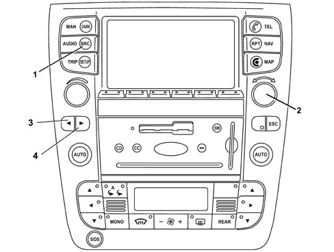
- 1 - SRC button
- 2 - Selector knob
- 3 - Search / selection button
- 4 - Search / selection button
The main functions are:
- standard TV;
- Autostore;
- Settings
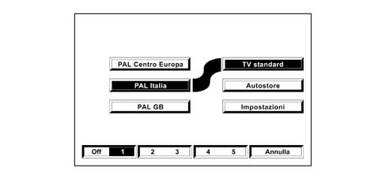
TV STANDARD function
This function makes it possible to set the standard television for the country you are in. The following alternatives are available:
- Central European PAL;
- Italian PAL;
- GB PAL;
- Secam East E;
- Secam France.
To set the standard television, select and confirm the TV standard function using the right knob (2), then select and confirm the standard again using the right knob.
AUTOSTORE function (automatic programming of transmitters)
To activate the Autostore function (automatic memorizing of tranmitters) select it and confirm it using the right knob (2).
When this function is activated, the TV tuner automatically stores the 5 transmitters with the strongest signal, for the TV standard set, in decreasing order of signal strength, in its memory.
The message "Autostore" will appear on the display during the automatic storage stage. To interrupt the automatic memorizing process, press the "Delete" multifunction button; the TV will tune into the transmitter received before the function was activated.
The transmitters tuned into using the Autostore function will be automatically memorized at the preselection buttons (1), (2), (3), (4) and (5). When the memorizing has taken place, the TV will automatically tune into the first transmitter memorized at the preselection button (1).
Each station will be stored once only, except in the case of regional broadcasters that could be stored several times under certain circumstances.
The behaviour of the equipment whilst the Autostore function is activated is as follows:
- when the Autostore function is activated all the other functions are disabled;
- any variation in the volume is not shown on the display;
- by pressing one of the preselection buttons from 1 to 5 the automatic memorizing process will be interrupted and the broadcaster memorized using this button will be tuned into;
- to interrupt the automatic memorizing process, press the "Delete" multifunction button; the TV will tune into the transmitter received before the function was activated;
- pressing the Off multifunction button interrupts the automatic memorizing process and the TV switches off;
- changing the audio source during the automatic memorizing process does not interrupt the Autostore function.
SETTINGS functions
This function makes it possible to adjust the TV tuner audio and video parameters.
The following settings are available:
- Treble
- Bass
- Balance
- Fader
- Brightness
- Contrast
- Saturation.
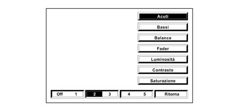
TREBLE function (adjustment of high tones)
Proceed as follows:
- select and confirm the "Settings" function on the page with the main TV tuner functions;
- select and confirm the "Treble" function using the right knob (2) to access the screen with the adjustment cursor;
- turn the right knob (2) towards the left to increase the treble or towards the right to decrease it.
At the end of the adjustment, press the knob to confirm the setting and move on to the adjustment of the other parameters. Pressing the multifunction button by the item "Delete" restores the settings memorized previously.
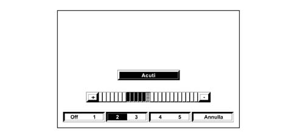
BASS function (adjustment of low tones)
Proceed as follows:
- select and confirm the "Settings" function on the page with the main TV tuner functions;
- select and confirm the "Bass" function using the right knob (2) to access the screen with the adjustment cursor;
- turn the right knob (2) towards the left to increase the bass or towards the right to decrease it.
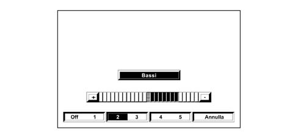
At the end of the adjustment, press the knob to confirm the setting and move on to the adjustment of the other parameters. Pressing the multifunction button by the item "Delete" restores the settings memorized previously.
BALANCE function (sound balance - left and right sides)
The balance function makes it possible to alter the distribution of the sound between the speakers on the left and right sides of the passenger compartment.
Proceed as follows to adjust the sound balance:
- select and confirm the "Settings" function on the page with the main TV tuner functions;
- select and confirm the "Balance" function using the right knob to access the screen with the adjustment cursor;
- turn the knob towards the left or the right to alter the distribution of the sound in the passenger compartment between the left and right speakers, respectively, then press the knob to confirm the adjustment.
Pressing the multifunction button by the item "Delete" restores the settings memorized previously.
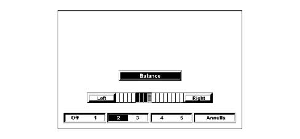
FADER function (sound balance - front and rear)
The fader function makes it possible to alter the distribution of the sound between the speakers at the front and the rear of the passenger compartment.
Proceed as follows to adjust the sound balance:
- select and confirm the "Settings" function on the page with the main TV tuner functions;
- select and confirm the "Fader" function using the right knob to access the screen with the adjustment cursor;
- turn the knob towards the right to increase the sound for the rear speakers or towards the left to increase the sound for the front speakers, then press the knob to confirm the adjustment.
Pressing the multifunction button by the item "Delete" restores the settings memorized previously.
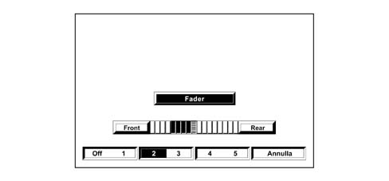
BRIGHTNESS function
Proceed as follows:
- select and confirm the "Settings" function on the page with the main TV tuner functions;
- select and confirm the "Brightness" function using the right knob to access the screen with the adjustment cursor;
- turn the right knob towards the left to increase the brightness or towards the right to decrease it.
At the end of the adjustment, press the knob to confirm the setting. Pressing the multifunction button by the item "Delete" restores the settings memorized previously.
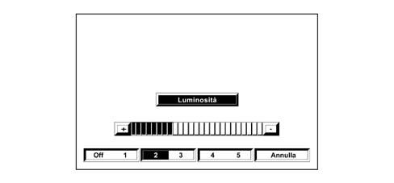
CONTRAST function
Proceed as follows:
- select and confirm the "Settings" function on the page with the main TV tuner functions;
- select and confirm the "Contrast" function using the right knob to access the screen with the adjustment cursor;
- turn the right knob towards the left to increase the contrast between the light and dark tones on the screen or towards the right to decrease it.
At the end of the adjustment, press the knob to confirm the setting. Pressing the multifunction button by the item "Delete" restores the settings memorized previously.
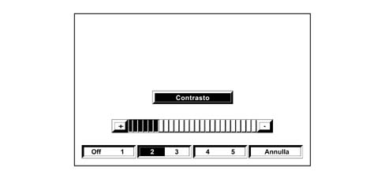
SATURATION function
Proceed as follows:
- select and confirm the "Settings" function on the page with the main TV tuner functions;
- select and confirm the "Saturation" function using the right knob to access the screen with the adjustment cursor;
- turn the right knob towards the left to increase the intensity of the colours on the screen or towards the right to decrease it.
At the end of the adjustment, press the knob to confirm the setting. Pressing the multifunction button by the item "Delete" restores the settings memorized previously.
Transmitter tuning
Automatic tuning
This allows an automatic search for broadcasters.
Proceed as follows:
- select the TV tuner mode using the SRC button or the multifunction buttons:
- press button 3 or 4 to start the automatic search for tuning into the next station that can be received, either decreasing or increasing the frequency.
Manual programming of transmitters
The station that is being received can be stored using the multifunction buttons (1), (2), (3), (4), (5).
To programme the station tuned into, keep one of these buttons pressed until the number of the button where the station is programmed is shown on the display.
Automatic programming of transmitters
The Connect TV tuner has an autostore function that makes it possible to automatically memorize the 5 stations with the strongest signal. To activate this function, refer to the Autostore Function paragraph.
View of transmitters programmed
Proceed as follows:
- select the TV tuner mode using the SRC button or the multifunction buttons;
- press the multifunction button (1), (2), (3), (4), (5) where the station selected is programmed briefly.
ON-BOARD COMPUTER
The computer displays outside temperature and also supplies a set of information using the display modes shown in the following table:
Metric system | Imperial system | |
|---|---|---|
Distance travelled | km | miles |
Average speed | km/h | miles/h |
Instantaneous fuel consumption and average fuel consumption | km/l l/100 km | mpg (miles/gallon, UK) mls/gal (miles/gallon, USA) |
Distance | km | miles |
Trip time | hh:mm | hh:mm |
Distance from destination point | km | miles |
Arrival time | hh:mm | hh:mm |
Dual trip memory
The NIT unit supplies two trip memories (Trip A = "continuous", Trip B = "from hh:mm", the first (Trip A) displays information from the first zero reset carried out by the user, while the second (Trip B) displays the information from the last zero reset carried out by the user or the last automatic reset.
The count/update of these values is valid only if the NIT unit receives a fuel consumption signal (including cut-off condition (more than 300 rpm.)).
Zeroing trip memory
The user is able to zero the trip memories manually.
Trip memories are zeroed automatically if:
- Route length exceeds 4999.9 (kilometres or miles),
- the user changes the display units from miles to kilometres and the route length following this conversion operation exceeds 4999.9 kilometres.
- trip time exceeds 99:59,
- the battery is disconnected,
- a zero operation is carried out for Trip A (only for Trip B),
- apart from these conditions, the Trip B memory must be zeroed if the time between deactivation and the next activation exceeds 2 hours.
If a single trip memory value is zeroed, all values of this trip memory are zeroed (Trip A/B).
Display of journey time
Trip time from the last zero reset carried out by the user or automatic zeroing is taken as the trip time.
After a zero operation, all values are returned to "00:00".
The value at the time of the last deactivation is displayed upon each activation.
After deactivation, the trip time calculation is suspended. The counter increases only as long as the ignition key is turned to ON, i.e. as long as the IDIS system is in ACTIVE_ON_KEY_ON mode (active due to ignition-operated activation).
The maximum stored time value is "99:59".
Display of arrival time/time elapsed (BC007)
If the distance to the destination is known, the estimated arrival time and time elapsed are calculated and displayed on the NIT.
Display of distance travelled
The system displays the distance travelled during the current trip from the last zero reset.
The maximum value is "4999,9 km" (miles).
The resolution is "0.1 km" (miles).
The value is updated every 0.1 km (miles).
Display of average consumption
Average fuel consumption is calculated using the equation:
- average consumption = distance travelled/quantity of fuel consumed.
The displayed value refers to the average consumption for the current trip.
At the beginning of a new trip (zero) or following battery connection, the displayed value corresponds to a preset data equivalent to 10 km/l.
The initial value is weighted to prevent great fluctuations during the first few minutes. After this period, the average fuel consumption displayed reflects the measured value.
During the first 10 seconds, the value "----" is displayed.
The value at the time of the last deactivation is displayed upon each activation.
When the car is at a standstill, the value is calculated using the instantaneous fuel consumption signal (increase nil).
The resolution is "0.1 km/l" (mpg).
Calculation precision is = < 0.1 km/l
The value is updated every 10 ± 1 seconds or after 0.1 km (miles), whichever comes first.
Maximum value: 50 km/l - 2 l/100 km - 99.9 mpg
Minimum value: 4 km/l - 25 l/100 km - 2 mpg.
Display of instant consumption
The value is calculated using the instantaneous fuel consumption signal received via B-CAN.
Instantaneous fuel consumption is calculated so that the user is able to be aware of the fuel consumption change but without major fluctuations.
At the beginning of a new trip (zero) or following battery connection, the displayed value corresponds to a preset data equivalent to 10 km/l, but the value "---" is displayed during the first 10 seconds.
The initial value is weighted to prevent major fluctuations during the first few seconds.
After this period, displayed instantaneous fuel consumtion reflects the measured value.
The value at the time of the last deactivation is displayed upon each activation.
The resolution is "0.1 km/l" (mpg).
Calculation precision is = < 0.1 km/l
The value must be updated every t REFRESH seconds.
Maximum value: 50 km/l - 2 l/100 km - 99.9 mpg
Minimum value: 4 km/l - 25 l/100 km - 2 mpg.
Display of distance that can be travelled depending on fuel level
This value indicates the distance that can be covered with the remaining fuel if the driving style remains unchanged. This is calculated from:
- current speed,
- maximum fuel quantity that the tank can hold (EOL programming),
- fuel level gauge,
- instantaneous fuel consumption.
The equation used for the calculation is as follows:
- Distance (km) = reference average fuel consumption [km/l] * quantity of fuel present [l].
Reference average fuel consumption is given by average fuel consumption for the last 5 minutes of the current trip.
If the fuel level in the tank is lower than a minimum vale corresponding to a distance of 50 km, the distance range is calculated without using the fuel level (because the fluctuations are too big).
the value "----" is displayed for the first 30 seconds at the beginning of a new trip (zero) or after battery connection.
The value at the time of the last deactivation is displayed upon each activation.
During the trip, the distance must be updated by making increases proportional to the distance between the displayed value and the calculated value (without major fluctuations).
- if the distance is > 40 km, distance must be altered by the difference/6
- if 6 = < the difference = < 39 kilometres, the distance must vary by about 3 km
- if the difference is = < 6 kilometres, the distance must vary by about 1 km
If the fuel level drops to the reserve (warning light) and distance is less than 50 km, the NIT unit does not display any distance range value. Instead the distance is calculated continuously.
The message "Attention" is displayed on the NIT unit. Refuel" and then the distance range reading becomes "----".
If the distance range is less than 50 km, the display shows the reading "----".
When the car is at a standstill (speed < 3 km/h) and the engine is on, the last value is displayed for 3 seconds. The NIT unit must then display the reading "----" while the distance range calculation function remains active.
When speed exceeds 3 km/h again, the distance range indicator switches back to normal mode. The new value is calculated taking into account fuel consumption during the last 5 minutes prior to the car halting.
The distance range value is calculated to prevent the car running of out fuel even if the distance range shown is > 0 km.
Technical requirements:
- calculation precision: 1 km
- resolution: 1 km
- update of displayed value every 30 s ± 1 s
- minimum displayed value: 50 km. If the distance range is lower, the display shows the reading "----".
Recognition of refuelling
The system recognises a refuelling condition if a minimum amount of fuel equivalent to at least 5 litres is introduced between car deactivation (KEY_OFF) and start-up (KEY_ON) using the ignition key.
Display of average speed
Average speed is calculated by means of the equation:
- average speed = distance travelled during trip/trip time
The calculation is carried out only if the engine is on.
The value "----" is displayed for the first 10 seconds following a zero reset or at the beginning of a new trip. The system then displays the calculated value.
The value at the time of the last deactivation is displayed upon each activation.
Technical requirements:
- The resolution is "0.1 km/h" (mph).
- Calculation precision is = < 0.1 km/h
- IThe value is updated every 10 ± 1 s.
Zeroing average speed
Trip A: average speed may be zeroed by selecting "Continuous zeroing"
Trip B: average speed may be zeroed by selecting "Zero from hh:mm" or it is zeroed automatically when more than 2 hours elapses from deactivation.
Display of speed limit
The NIT unit displays the current speed limit and its activation status (enabled/disabled).
If the speed limit is exceeded, the NIT unit displays a warning message and sends an acoustic signal.
Change speed limit
The user can change the speed limit within a speed interval between 5 km/h (3 mph) and 300 km/h (180 mph).
If the ACC function is present, the maximum speed limit value will not excee the ACC speed limit, which is equal to 170 km/h (105 mph).
The default delivery value is SPEED_LIMIT_DEFAULT (DEFAULT SPEED LIMIT). This is programmed as 130 km/h at the EOL.
The last available value is displayed after connection to the battery.
If the display units are changed, the speed limit value is converted to the new units.
Activation/deactivation of speed limit buzzer
When the speed limit buzzer is activated, the user is notified by means of a message window and an acoustic signal.
Otherwise, the user is notified only by means of a message window.
Activation/deactivation of speed limit
After setting a speed limit, the user can activate it.
If current speed exceeds the speed limit, a warning message is displayed while an acoustic signal (if enabled) warns the user to slow down.
PLANNING (SERVICES)
Display of planning items
The NIT displays technical service information in a list (planning items).
This information consists of technical service information programmed by the user and manufacturer.
Selecting a planning item
The user can select one technical service information item for display, modification or deletion.
Change a planning item
The user can modify selected technical service information items only if the items are programmable by the user.
The manufacturer’s technical service information may only be displayed, not modified.
Creating a new planning item
The user can create new technical service information items. The following fields may be modified:
- Text
- Date and mileage
Deleting a planning item
The user can delete technical service information.
It is possible to delete only technical service information items created by the user. It is not possible to delete manufacturer’s technical service information items.
Announcement when a planning item date or mileage is reached
The user is informed by means of a message window and an acoustic signal (buzzer) when a technical service item date or mileage is reached.
INTERFACE WITH EXTERNAL ECUs
Acoustic interface
Acoustic interface with parking sensor
The B-Can node of the parking sensor (NSP) may require the emission of different sounds with different volume levels on one or more of the four channels present on the car.
All directional channel information is controlld by attenuation and balance settings.
Since no synchronisation mechanism is specified for an acoustic output request, the parking sensor is not informed if its request is cancelled by elements with higher priority.
Gateway functions
Low engine coolant level message
The digital signal "low engine coolant level" is received periodically at an NIT unit digital input and transferred to the instrument panel via the B-CAN network.
This digital input is protected by means of a hardware circuit and short circuit or open circuit conditions cannot therefore be detected. No subsequent signal processing operations are carried out (e.g. echo elimination).
Low screen washer fluid level message
The digital signal "low washer fluid level" is received periodically at an NIT unit digital input and transferred to the instrument panel via the B-CAN network.
This digital input is protected by means of a hardware circuit and short circuit or open circuit conditions cannot therefore be detected. No subsequent signal processing operations are carried out (e.g. echo elimination).
Exterior lighting sensor activation level message
The NIT unit downloads the level of the encoder that the user can use to set the exterior lighting sensor activation level. This value is transferred to the car on-board computer via the B-CAN network.
If a value within a range of 100 mV from the lower limit or upper limit of the input range is measured, this value is treated as a short circuit to earth or to the power supply respectively. In this case, the default value is used and a fault diagnosis code is saved.
The presence of an open circuit is treated as a short-circuit to earth.
Distribution of system date and time
The NIT unit distributes information on system date and time to the other nodes via B-Can. The time is always in 24-hour format, regardless of the display mode selected by the user.
Display access
Text messages present
The on-board computer node (NBC) can ask the NIT unit, via B-Can, to display text messages in a message window on the screen.
These messages are called up by means of a code number sent by the NBC.
These text messages must be confirmed by the user. The results of this confirmation (OK or delete) must be re-sent to to the node responsible for making the request).
The NIT unit does not carry out any software checks, apart from managing priority in relation to other messages on the screen.
Because no synchronisation message is present, the NBC unit is not informed when the display is not turned on.
Code input request
The on-board computer node (NBC) can ask the NIT unit, via B-Can, to ask the user to enter a 5-figure vehicle code number. The NIT unit must also display an accessory text message (called up by means of a code numer).
The combination of figures entered by the user and/or interaction with the user (OK or Delete) are sent back to the NBC unit.